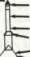
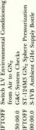
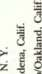
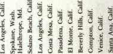
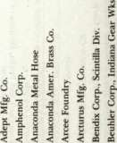
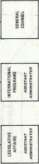
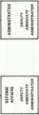
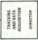
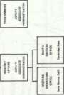
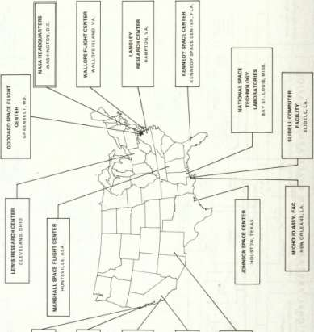

The overall success of the Saturn program depended on a significant number of key decisions. One of these would have to be the decision in 1957 to start consideration of the clustered engine concept as a means to get heavy payloads into orbit. As natural as this concept seems today, it has to be remembered that the tricky nature and recalcitrant operating characteristics of rocket engines at that time suggested clustering of two or more engines would be courting absolute disaster. Next was the decision to use liquid hydrogen as one of the propellants. The application of this high-energy fuel made all the difference in the performance of the Saturn I, Saturn IB, and Saturn V vehicles. The use of the fuel allowed optimum sizing of the stages while keeping the weight to a minimum, so that a three-astronaut payload could be carried successfully into orbit and boosted into lunar trajectory. The controversy of EOR-LOR also stands out as a major period of decision early in the program. The choice of LOR led to the successful Saturn IB interim vehicle and stabilized the design configuration of the Saturn V. Finally, the decision to adopt the all-up concept stands out as one of the steps that permitted the United States to achieve the manned lunar landing on the moon before the end of the 1960s.
It is interesting to note that the von Braun team argued about the acceptance of three of these four major program milestones. On the other hand, the argument seems to have been one of degree rather than one of substance. Despite the strong recollections of individuals who say that von Braun opposed liquid hydrogen from the beginning, one must remember that LH 2 had been included very early by MFSC—in terms of the Centaur upper stage—in some of the early Saturn system studies.
The collective technological experience of the Saturn program was effectively applied in planning the Shuttle program, most notably in the Shuttle's propellant and propulsion systems. Marshall's experience in the handling and pumping of cryogenics, construction of fuel tanks, and development of the LH 2 engines were directly applied to the Shuttle concept. 29
In one respect, the technology of the Saturn vehicle represented the closing of a circle in international space partnership and cooperation. Allies in World War II, the U.S. and the U.S.S.R. both borrowed heavily from the technological storehouse of their defeated foe, Germany. In the early postwar years, both the U.S. and the U.S.S.R. learned from firing their respective stocks of captured V-2 rockets and perfected significant sectors of their own new rocket technology out of the V-2 experience common to both. This propulsion technology was further elaborated during the Cold War era along an escalating front of improved ICBM weaponry. When landing on the moon became an acknowledged race,
LEGACIES
both borrowed liberally from the extant technology of ICBM propulsion systems to build large rocket boosters. Tempered in wars both hot and cold, the technological heritage of the launch vehicles that put the Apollo-Soyuz Test Project into orbit could be traced back to the German technicians of World War II. The former wartime allies were now closing a technological circle that had ranged from partners, to protagonists, to partners again, with German expertise in rocketry as a catalyst.
Partnership in space, by itself, will be no automatic guarantee of international amity. Partnership in space exploration may be an exhilarating prospect, however, offering an additional incentive for international cooperation and peace. If so, then the Saturn program may count this factor as its most important legacy.
Appendixes
Appendix A—Schematic of Saturn V
379 LITERS MONOMETHYLHYDRAZINE (REACTION CONTROL SYSTEM) . 227 LITERS NITROGEN TETROXIDE (REACTION CONTROL SYSTEM) . 9500 LITERS NITROGEN TETROXIDE • 8000 LITERS HYDRAZINE/UNSYMMETRICAL < DIMETHYL HYDRAZINE LUNAR MODULE.
3800 LITERS NITROGEN TETROXIDE (LUNAR MODULE ASCENT/DESCENT STAGE)

253 200 LITERS LIQUID HYDROGEN'
92 350 LITERS LIQUID OXYGEN
95 LITERS NITROGEN TETROXIDE
(AUXILIARY PROPULSION SYSTEM)
114 LITERS MONOMETHYLHYDRAZINE
(AUXILIARY PROPULSION SYSTEM)
1 000000 LITERS LIQUID HYDROGEN •
101.6 METERS
331 000 LITERS LIQUID OXYGEN
1311 100 LITERS LIQUID OXYGEN
810 700 LITERS RP-1 (KEROSENE)
e
1 PITCH MOTOR (SOLID) 13300 NEWTONS THRUST
1 TOWER JETTISON MOTOR (SOLID) 178 000 NEWTONS THRUST
LAUNCH ESCAPE SYSTEM
1 LAUNCH ESCAPE MOTOR (SOLID) 667 000 NEWTONS THRUST
APOLLO COMMAND MODULE
» 12 CONTROL ENGINES (LIQUID) 390 NEWTONS THRUST EACH * 16 CONTROL ENGINES (LIQUID) 445 NEWTONS THRUST EACH
""^SERVICE MODULE
ENGINE P-22K S (LIQUID) 97 400 NEWTONS THRUST
* 11
--A^ 16 ATTITUDE CONTROL ENGINES (LIQUID) 445 NEWTONS THRUST EACH XI;T **\I ASCENT ENGINE (LIQUID) 15700 NEWTONS THRUST
1 DESCENT ENGINE (LIQUID) 4670 TO 46 700 NEWTONS THRUST

"*• INSTRUMENT UNIT
' THIRD STAGE
. 6 ATTITUDE CONTROL ENGINES (LIQUID) 654 NEWTONS THRUST EACH , 2 ULLAGE MOTORS (SOLID) 15 100 NEWTONS THRUST EACH
• 2 ULLAGE ENGINES (LIQUID) 320 NEWTONS THRUST EACH . 4 RETROMOTORS (SOLID) 158 800 NEWTONS THRUST EACH
J-2 ENGINE (LIQUID) 889600 NEWTONS THRUST
SECOND STAGE
8 ULLAGE MOTORS (SOLID) 101 000 NEWTONS THRUST EACH
' 5 J-2 ENGINES (LIQUID) 889 600 NEWTONS THRUST EACH (LATER UPRATED TO 1 023 000 NEWTONS)
FIRST STAGE
8 RETRO MOTORS (SOLID) 391 000 NEWTONS THRUST
5 F-1 ENGINES (LIQUID) 6 672 000 NEWTONS THRUST EACH (LATER UPRATED TO 6 805 000 NEWTONS)
APPENDIX A
Average R&D Costs for One Saturn I, IB, and V Launch Vehicle
Saturn I The initial development and production of the Saturn I was accomplished in-house; only the latter stages were placed on contract. Army projects assumed the initial FY 1958 and 1959 costs; NASA's total costs were not accumulated, during the development phase, to provide a true average unit cost (i.e., the original plan for S-I stages was to procure 21 each). At the conclusion of the program shown on the funding history, the total cost to NASA of the 10 Saturn Is actually launched was $753 million.
Saturn IB and Saturn V
Costs for development and production of the Saturn IBs and Saturn Vs were not collected by specific vehicle because of the magnitude of the modifications based on mission requirements and because of the sustaining engineering and launch support required to support lengthened schedule restraints. The following unit costs include production of basic hardware plus modifications, spares, and associated ground support equipment for MSFC-responsible hardware only (first stage through instrument unit). Costs exclude all development, sustaining engineering, transportation, propellants, storage, etc., required to launch.
Stage
Basic Hardware Production
Modification Costs
Spares
Stage & Vehicle Ground Support Equipment (GSE)
GSE
Systems Development
Total Stage
Saturn IB Total Production Cost — $46.7M
S-IB S-IVB IU GSE
Engines
Total
7.9
13.0
8.3
3.6 32.8
0.3 1.9 0.4 0.5
3.1
1.1 0.9 0.6 0.5 1.0
4.1
0.1 0.2 0.4 3.1
3.8
2.6 2.6
9.4 16.0 9.7 6.7 4.6
46.4
Saturn V Total Production Costs — $113.1M
Appendix B—Saturn V Prelaunch —Launch Sequence
AS-509 Prelaunch Operations
Event Completed
LM Operations 30 Oct 70
Combined System Test 4 Dec 70
Unmanned Altitude Run 5 May 70
Manned Altitude Run 18 Sep 70
LM/SLA Mate 22 Oct 70
CSM Operations 3 Nov 70
Combined System Test 4 Dec 70
Unmanned Altitude Run 27 Aug 70
Manned Altitude Run 3 Sep 70
GSM/SLA Mate 31 Oct 70
Ordnance Installation 7 Nov 70
LV VAB Low Bay Operations 12 May 70
IU Low Bay Checkout 12 May 70
S-IVB Low Bay Checkout 12 May 70
S-II Low Bay Checkout 11 May 70
LV VAB High Bay Operations 29 Oct 70
S-IC Erection 14 Jan 70
LV Erection 13 May 70
LV Electrical System Test 6 Oct 70
LV Malfunction Overall Test 21 Oct 70
LV Service Arm Overall Test 29 Oct 70
Spacecraft Erection 4 Nov 70
Space Vehicle VAB Operations 8 Nov 70
Transfer to Pad 9 Nov 70
Pad Operations 31 Jan 70
LV Power ON 11 Nov 70
Space Vehicle Overall Test 7 Dec 70
LV Flight Systems Test 11 Dec 70
SV Flight Electrical Mating 11 Dec 70
SV Back-up Guidance Test 14 Dec 70
SV Flight Readiness Test 15 Dec 70
SV Hypergolic Loading 8 Jan 71
S-IC RP-1 Loading 9 Jan 71
CDDT-Wet/Dry 18 Jan 71
SV Countdown Prep 25 Jan 72
Countdown 31 Jan 71
APPENDIX B
£
O
-
q q °]
d d 06
— o o oJoJoJJoo ooooJoJddddJ
qqq qqqooqqqq qqqqqqqqqqqq
odd ddindddddd dddddddddddd
qqo qeocNoqqqoo eoeoecoqocoooecoo
__ __ _ ooooooooo
oooooooooooo
.a a
w

<gu
g £ =
q q q q q q d d d d d d o o o o o o
qqqqqqqqqq
ddoddddddd oooooooooo
qqq qqqqqqqqqqqqqqqqqqqq odd dddddddddddddddddddd qqq qqqqqqqqqqqqqqqqqqqq
SATURN V PRELAUNCH-LAUNCH SEQUENCE
11
T3 O
= T3
U ^
. u ^
-Q fc
£ -°
1 2 £
pd
_ A
£•£ u
£ 3 «
H .£ 3 c
!= 3
E -e
i 3
< S2
BO JJ
C/3 *—
(U CL, u
< -3
§1
11
c .2 c
«-• o
re
i^.s u u «5 -^ 'So E
* u -o c
3 cr u
C/3 C
ll
O 4J -O </">
c .y
§ i
u s
•S .3 a •
3 £ £
S S «
D f8 E
U "
C O
U "re
£ as u
u > -
c/o 05
^ re
c u
re r ^
H x
* O
o J
3 oa
u -7 <u 2 T "T
O5 c/5 H C/5 C/5 C/5
- re
c u, ** c
iy
— _ U
ti re x
u c Q
CL, fc.
^ r*
—i ^ _ —
re c c u
.5P
UH
£
•^ £
u
w 3
y (-<
X
-HO „
U !N
<u ?j "^ X u "^ 3 I J O (W J » _j gQ -J BO CQ
i
T! >.
I <U
So 5 <u
Q. u 3 C 2 'So
l-s
« u
-a r~ z: u c . ~2i ">
E c ^ -^
re .X
= "5
U4 -
< U
ill - !
It. O5 c/3 C/3 <3
S w ^ 5 tS B
^^ ^"s E
^^ £ §^^< c b '5 c/b h S
. « < C u u *
c u w ^P 2 2 •§
2 2 •>:;'£'£ 2
3 S in « o o o
O O O O
ooooon®oot^/-N pppyppinp^
o o £;
. .
ooo-JooooJ
p 01 — p p 2
o 06 •* o 06 n
n o o eo o H
6' o o o o L
o o o o o ~
O £
O O d
u — •
i f ^J
U« U. X
o o o o o
oooooooooooooooooo
o oO
—• — pppppppppppppppp oooooooooooooooooo
o o
o o o o o o
o o
o o o o
( c o», .o
rs "O
b C
= & ^
$ 00
II
u re ja w
Cu
03 as
H l w
X c
O '3c
-i c
CQ
C C
U
c
re -. ..
h H H
XXX
000
W C/3
£ ^
s a -S
h H
"5 (* o > oa 5 >^ 55
o o
^
o o
> —' __ — BO
—« "— •« r* '3
-J ^
XX
33
c p. H x
s«
3 re w u
4i X
oS
5,-a-lE
-^ ft t»H
S
H
x
C be
fi re
££
-; ->
^ ea
1C
J W W 5*J
S3 I I I
•g -i j j
3 oa pa oa
o Ji
1 s
re 5
T D
ppp^pppppp
oooPoooooo
ai
ppppppppppp^
p p p p p p o o o to «o 6
poop
00 CO 00 CO
tn
6-\
ooppppppppppppppppppppp oo'o'o'oo'ooo'oo'o'oo'oo'o'oo'o'o'oo' ooooooooooooooooooooooo
p p p p p p
o d o o d 6
o o o o o o
APPENDIX B
i^fr
•^ rt « 3
U
i-s
So a
S .£ •3 u 'C 15 u g
13 _
•a -6 a £
L^ 3
h «
tt
U
D m
P <*-
.fa w
j—i hH
OS
E 2 S
0 '3 ^ ^ O ^-^
^ *J Z
1 S ^ P .fa BJ
fe I
bC JS Z
D T3
< 0
CQ c
> '5
-H 5J
c« 03
O O
6 o
H H
CO CO
o o
C 3
O *
>^~°
1=
fc
llllll^fl
5 5 -
P P
O CM
CM CO 00 O O O CM CO ^D O CO 00
•— ' — < co eo
OOOOOO
hh HHHhhh hhh
CO T)< Cl ~-> —•> -H CM CD «D O CO 00
ID CD 00 O iO CO
CM CM
CM CM
CM CM CM CO CO CO CM CM CM CM CM CM
CO CO CO CM CM CM
SQ
-
^
WO
g
O. 0.7; OU O
S 2 iu^ 2 g
'
C "C
oooooooooo
HhHHHHHhhH
cOCOCOcOCOcOTfOOO
COCOCOCOOOCOCOCOCOCO CMCMCMCMCMCMCMCMCMCM
09
09
i 3 £
-
O
03
U
O CT> (O —
~, o P V:
SS88
— OCM —
i i + +
h H h h
ooooo
+ + + + + H h h h h
£ o «
0 -3 ^
1 £ Z
—' •
S ^
•-* u.
,fa oi
OOOO
OOOOO
IP
H -S
. be u u c^ CQ
o o
IN (M
h h
I
e .
« O U S .2
hhh
h
OOO O
Of} W CO CO
h h h H
CM oq >n CM
Tf Tf — CM
SATURN V PRELAUNCH-LAUNCH SEQUENCE
Appendix C—Saturn Flight History
APPENDIX C
Saturn Family/Mission Data
SATURN FLIGHT HISTORY
Crew
Lunar
Landing
Site
Stages on Dock KSC
S-I S-IV S-IB S-IU S-IC S-II S-1VB
Unmanned
N/A
8-15-61 Dummy — 8-15-61 — 8-15-61
Unmanned
Unmanned
Unmanned
N/A 2-27-62 Dummy — 2-27-62 —
2-27-62
N/A 9-19-62 Dummy — 9-19-62 —
9-19-62
N/A
2-2-63 2-2-63 — 2-2-63 — — —
Unmanned Unmanned
N/A 8-21-63 9-21-63 — 8-21-63 — — —
N/A 2-18-64 2-22-64 — 2-18-64 — — —
Unmanned Unmanned
N/A 6-7-64 6-12-64 — 6-7-64
N/A 2-28-65 2-25-65 — 3-8-65
Unmanned
N/A 10-30-6410-22-64 — 10-30-64 — — —
Unmanned
N/A
6-1-65 5-8-65 — 6-1-65 — — —
Unmanned
N/A 8-14-65 — 8-14-65 10-22-65 — — 9-18-65
Unmanned
N/A 2-7-66 — 2-7-66 2-21-66 — — 1-29-66
Unmanned
N/A 4-12-66 — 4-12-66 4-14-66 — — 4-6-66
Unmanned
N/A 8-15-66 — 8-15-66 8-16-66 — — 8-6-66
Commander Schirra
CM Pilot Eisele
LM Pilot Cunningham
N/A
3-28-68 — 3-28-68 4-11-68 — — 4-7-68
APPENDIX C
Saturn Family Mission Data—Continued
Launch Mission Launch Program Vehicle Desig Date
Payload
Description
Remarks
SA-206 SL-2 5-25-73
SA-207 SL-3 7-23-73 CSM-117
Saturn IB SA-208 SL-4 11-16-73 CSM-118
SA-209 ASTP backup
CSM-116 First manned launch to Duration 28 days
the Earth orbiting space station. Repaired damaged solar array wing & deployed parasol
Second manned launch Duration 59 days to the Earth orbiting space station. Solar data, EREP, & biomedical experiments
Third manned launch Duration 60 days to the Earth orbiting Open-ended to 85 space station. Solar days
data, EREP, & biomedical experiments
CSM-119 Provided SL crew SL mission
rescue capability until successfully
2/8/74 (splashdown of completed 2/8/74 SA-208)
SA-505 Apollo 10 5-18-69
CSM-106 LM-4
SA-506 Apollo 11 7-16-69 CSM-107 LM-5
EASEP
First manned CSM/LM oper in cislunar & lunar environment
First manned lunar landing mission development EASEP
Simul lunar landing mission 61.6 hrs in lunar orbit (31 orbits). Off Earth duration 8 days
One EVA 2.5 hrs, lunar stay 21.6 hrs. Off Earth duration 8 days & 3.3 hrs
SATURN FLIGHT HISTORY
Commander Armstrong Sea of Tranquility CM Pilot Collins ret 21 kg
LM Pilot Aldrin lunar samples
— — — 2-27-69 2-20-69 2-6-69 1-18-69
APPENDIX C
Saturn Family Mission Data — Continued
Launch Mission Launch Program Vehicle Desig Date Payload
Description
Remarks
SA-511 Apollo 16 4-16-72 CSM-113LM-11 LRV-2 UV-photo
SA-512 Apollo 17 12-6-72 CSM-114, LM-12 LRV-3, ALSEP & surface expr.
SA-513 SL-1 5-14-73 Multidocking Adpt. ATM, Workshop Module Airlock
SA-514 Mission not assigned SA-515 Mission not assigned
Fifth manned lunar LRV traverses 26.9
landing deploy ALSEP- km. Off Earth
UV camera 3 traverses duration 11 days &
with LRV-2 7.2 hrs - 7.4 2 hrs hrs - 5.6 hrs
Sixth manned lunar LRV traverses
landing 3 traverses with distance 35.7 km LRV-3 7.2 hrs - 7.6 hrs -7.3 hrs
Unmanned launch Manned logistics:
placed space station in launches SL-2, SL-3,
a circular Earth orbit & SL-4 433km
SATURN FLIGHT HISTORY
Appendix D—Saturn R&D Funding History
APPENDIX D
Appendix E—Saturn V Contractors
APPENDIX E
SATURN V SUBCONTRACTORS
APPENDIX E
SATURN V SUBCONTRACTORS
O
ti c
o ^ .a
e
— .as
•
cr
u
X >,
s s
5 £
c £
re w
o
u
-o
C
o
& -a
o^"5^^ ^"C^^w^. c a u 13 £.£ !"§•§ I J uShw«Hh>£S«htahcQHwu>>cA>
n
o "2
V
I "^
2 -
C "be
>- re
Q «
u
§ e-.1 ^
O
U
a cX
•o re
APPENDIX E
C/3
<U
I
s
.a -B
H a
I
.2 hi
£ 3 °
3 u 3
2 1
8. s
i
tT
o
'H 8
i
e
s
.5 •§ So J
^- 5 C i-
v c *5 ii
*-j C3 c/5 +-J
c^ ,t* crj rt
Ss S
«
u
oT "c3 -o c u

i
S
c c
<u .a « O S ^
| go
S £
* % * ^ ,.
^3 a .3|i
OS
c u -a
jy
"S ^
3 _ O oj U ^ — O
fi w & fl « S O J

09 U > c^
O
u
o U
la
o U
-o a
U
:-a
Q w :
c o
s is •£ c o
•a T3 .S
BQ Cu,
^ S
JU ^
1
<-> ;s
3 £ "8 -"
«j _o
j= U
_c
3
6 O ^ v •5 PJ
S 0
o c
. a
.S -a
0 o o o i ac i
w •
I ^
-M I—I
O rt U > M bD
C T3
Cu ^
bo
> Q
6 U
s 5 g w
• • ••* JS
3 c . «
"B i; ^
C .2 ^S
aj V ft fi "Q C T3 C O c
a -a a • a a
C c C 2 be bo
SATURN V SUBCONTRACTORS
APPENDIX E
SATURN V SUBCONTRACTORS
bobc
•2 •§ .£ .S
•
^J ^^
cr «
s
JJ-§
s-.9-.9-o
: iO
^ssE
E E E t>
^ o -5
1
_re 3
"§
03 C/5
J^J^J^ O o
- .£5 J3 % O
§ iiJ
t/5 t/5 — 3
t« <« re x re re u Cu
e/5 U -S
?* 5T >-
QJ <U 1^ <U
E E E E
(U <U U U
I** 1^ QJ ^
H H h H
£ E
a u
11
•& •?.
c •
Cn ^—
^: >
> 2
1 1
z ac
U
> 3
a DC
c
3 I
«i •
u • £ -
o 'I ^
bo
S 'I .£
c "S. .$/•*< o
"u J
c c
2w fl
W
§ I
o U
be C
C 'be
a
c
o
c
u
o
=3 CQ
3
2 T3
C £
£• 1 I
o b u
u S S
•S "* ' J{
>< "be
U 3 U W
APPENDIX E
SATURN V SUBCONTRACTORS
re
U
S.
13
APPENDIX E
SATURN V SUBCONTRACTORS
JB 5 8
a. 1
APPENDIX E
SL
c/3
c rt
c ti 11
ee 1 I
• IL I
-a
1 1
1 -s
b C —
•
£ s
" 1
I f
T3 u
-
be
-a
P3
O
^
- —
8
U
So _c
a
C/3
u
•S3
1 : <
j
13 C
1 . 1 i 1

SATURN V SUBCONTRACTORS
APPENDIX E
Appendix F—Location of Remaining Saturn Hardware
Location of Remaining Saturn Hardware (As of 5 June 1975)
Appendix G—NASA Organization During
Apollo-Saturn
APPENDIX G
!
w ~~ CJ
< Q
18
o
O <->
C < .!
CO 3 OC <->
tt < I- Q
Z ^ j
o > § 3 5 S * °
= gas' ii il
c O S S °- g 5 5 fc 5 11
ORGANIZATION
Ul
O
Q-_^
CD
0-
Z 5
J
i
II




•9 i
(-9- Q << 2
*!
*5
!|S'
£ < « S
S < s I
APPENDIX G

UJ u.
3£ ~ -.
ORGANIZATION
o
z
UJ <
o s
APPENDIX G
ORGANIZATION
GEORGE C. MARSHALL SPACE FLIGHT CENTER (November 1960)
LEGAL OFFICE
Chief Counsel WE Guilian Patent Counsel JH Warden
Appendix H—MSFC Personnel During Apollo-Saturn
APPENDIX H
MFSC PERSONNEL DURING APOLLO-SATURN
APPENDIX H
MFSC PERSONNEL DURING APOLLO-SATURN
APPENDIX H
LU CC O LU O
co Q
s -
CC U
CC >
CC O
s <
CD
X
9 =»
z = z
< i-
5 -
U S
LL CO
S _,

" I
ctf O
< o
£ i
Notes
CHAPTER 1
1. The name of the locale, Cape Canaveral, was officially changed on 28 Nov. 1963 to honor the late President John F. Kennedy, and the NASA facility was henceforth called John F. Kennedy Space Center (KSC).
2. The official NASA history of Kennedy Space Center and the launch facilities and concepts is by Charles D. Benson and William B. Faherty, Moonport: A History of Apollo Launch Facilities and Operations, NASA SP-4204 (Washington, 1978). Material for this section was compiled from the following sources: KSC, The Kennedy Space Center Story (Kennedy Space Center, Fla., 1969); NASA, Astronautics and Aeronautics, 1969: Chronology on Science, Technology, and Policy, NASA SP-4014 (Washington, 1970); MSFC, "Chronology of MSFC—1969" (draft copy), (1972); NASA, Saturn V News Reference (1968); MSFC, Saturn V Flight Manual, SA-506 (1969).
3. MSFC, Saturn V Flight Manual, SA-506, passim; MSFC, Chronology of MSFC—1969, passim; NASA, Saturn V News Reference, passim.
4. There are many books covering this period. For a readable and authoritative summary, see the well-illustrated historical survey by Wernher von Braun and Frederick I. Ordway, History of Rocketry and Space Travel (New York, 1969), pp. 22—40, which also includes an excellent bibliography. See also Eugene M. Emme, A History of Space Flight (New York, 1965), passim., which includes a bibliography. For the lifesaving rocket, see Mitchell R. Sharpe, Development of the Lifesaving Rocket, Marshall Space Flight Center, Historical Note no. 4, 10 June 1969. The bibliographical study by Katherine Murphy Dickson, History of Aeronautics and Astronautics: A Preliminary Bibliography, NASA HHR-29 (Washington, 1968), features annotated entries, and lists many government documents, as well as articles from scholarly journals and periodicals of both European and American origin.
5. For an overview of this era and its leading personalities, see the histories by Loyd S. Swenson, Jr., James M. Grimwood, and Charles C. Alexander, This New Ocean: A History of Project Mercury, NASA SP-4201 (Washington, 1966); von Braun and Ordway, History; and Emme, History. Tsiolkovsky's collected papers are available in translation as NASA Technical Translations F-243, 326, 327 and 328 (1965). For an authorized biography of Goddard see Milton Lehman, This High Man: The Life of Robert H. Goddard (New York, 1963); but see also Esther Goddard and G. Edward Pendray, eds., The Papers of Robert H. Goddard (New York, 1970), 3 vols. Willy Ley, Rockets, Missiles, and Men in Space (New York, 1968) includes considerable historical information. Ley not only knew Oberth and other pioneering figures of the twenties and thirties, he also participated in many experimental projects. Frederick C. Durant, III, and George S.James, eds., First Steps Toward Space, Smithsonian Annals of Flight, no. 10 (Washington, 1974), includes a memoir by Oberth, as well as contributions concerning Goddard and the Smithsonian, and essays on rocket research in Europe and the U.S. in the twenties and thirties. Eugene M. Emme,
NOTES TO PAGES 11-19
ed., The History of Rocket Technology: Essays on Research Development and Utility (Detroit, 1964), includes summary essays on U.S. rocket technology in the pre-World War II years.
6. See, for example, von Braun and Ordway, History; Emme, History of Space Travel; and Swenson, Grimwood, and Alexander, This New Ocean. Wartime Russian rocketry is analyzed in Coleman Goldberg, An Introduction to Russian Rocketry: History, Development, and Prospects, Off. of the Asst. Chief of Staff, Intelligence. U.S. Army Field Detachment R, 1 June 1959. Copy in JSC files.
7. Ernst Stuhlinger, et al., eds., Astronautical Engineering and Science: From Peenemuende to Planetary Space (New York, 1963), pp. 366-367; von Braun and Ordway, History, pp. 63-74.
8. Dornberger summarizes the V-2 work in Emme, Rocket Technology, pp. 29—45, and has published his own memoir, entitled V-2 (New York, 1954). This book is one of the most authoritative works on the V-2 and Peenemuende generally available, in addition to Dieter K. Huzel, Peenemuende to Canaveral (Englewood Cliffs, N.J., 1962); and Krafft A. Ehricke, "The Peenemuende Rocket Center, Part 2," Rocketscience, 4 (June 1950):35. See also, Mitchell Sharpe, "Evolution of Rocket Technology: Historical Note, Saturn History Project," Jan. 1974, pp. 15-20 (copy in SHP files); von Braun and Ordway, History, 104—117. Practically every aspect of the V-2, from basic research to its early design and testing to its deployment, can be found in a large collection of technical reports from Peenemuende, located in the Redstone Scientific Information Center, U.S. Army Missile Command, Redstone Arsenal, Ala.
9. Von Braun and Ordway, History, pp. 114—117; Dornberger, V-2, passim. Plans for rounding up German scientific and technical personnel were in progress by early 1945. During the spring, the idea was known as Operation Overcast. In 1946, the program was renamed Operation Paperclip, the designation which became the most familiar. See Clarence Lasby, Operation Paperclip (New York, 1971).
10. Von Braun and Ordway, History, p. 18; Sharpe, "Evolution," pp. 42-48. Between May 1945 and Dec. 1952, the U.S. recruited 642 foreign technicians and specialists under Paperclip. Lasby, Operation Paperclip, gives the absorbing details of their utilization by the Air Force, Army, and Navy. Generally, most of the specialists served individually or in very small, close-knit groups. The von Braun team of 132 was by far the largest single group.
11. For an overview of the early postwar era, see von Braun and Ordway, History, pp. 120-139; Swenson, Grimwood, and Alexander, This New Ocean, pp. 18-31. More specific studies include J. L. Chapman, Atlas: The Story of a Missile (New York, 1960); James Baar and William Howard, Polaris (New York, 1960); and Julian Hartt, Mighty Thor (New York, 1961). See also Ernest G. Schwiebert, ed., A History of the U.S. Air Force Ballistic Missiles (New York, 1965), and Michael Armacost, Politics of Weapons Innovation: The Thor-Jupiter Controversy (New York, 1969).
12. Von Braun and Ordway, History, 120 ff.
13. On the origins of the Redstone Arsenal, see David S. Akens, Historical Origins of the George C. Marshall Space Flight Center, MSFC Historical Monograph no. 1 (December, 1960). For accounts of the struggle between the Army and Air Force about the IRBM, see Armacost, Politics of Weapons Innovation, and John B. Medaris's memoir, Countdown for Decision (New York, 1960). On the role of ABM A, Jupiter, and Polaris, see von Braun and Ordway, History, pp. 130-132; Baar and Howard, Polaris; Wyndham D. Miles, "The Polaris," in Emme, ed., Rocket Technology.
14. Von Braun and Ordway, History, 132-136; Schwiebert, History, passim; Chapman, Atlas; Hartt, Mighty Thor. See also, Robert G. Perry, "The Atlas, Thor, and Minuteman," in Emme, ed., Rocket Technology.
15. The most detailed and objective description of the events leading to the selection of Vanguard over other competitors is found in Constance M. Green and Milton Lomask, Vanguard—A History (Washington, 1971). See also von Braun and Ordway, History, pp. 150 et seq.; Emme, History of Space/light; R. Cargill Hall, "Early U.S. Satellite Proposals," Wernher von Braun, "The Redstone, Jupiter, and Juno," and John P. Hagen, "The Viking and the Vanguard," in Emme, ed., Rocket Technology.
16. Walter Haeussermann to Robert G. Sheppard, "Comment Edition of History of Saturn Launch Vehicles," 22 June 1976. For the story of the Jupiter launch vehicle and the Explorer satellite, see, Medaris, Countdown, passim.; von Braun, "Redstone, Jupiter, and Juno," in Emme, ed., Rocket Technology; Stuhlinger et al., Astronautical Engineering, pp. 203-239.
17. See, for example, the essay by John P. Hagen, "Viking and Vanguard," cited above; Milton W. Rosen, Viking Rocket Story (New York, 1955); Green and Lomask, Vanguard. On IGY, Sputnik, and the NASA story, see Emme, History of Spaceflight, pp. 120-130; Swenson, Grimwood, and
NOTES TO PAGES 21-32
Alexander, This New Ocean, pp. 18 et seq.; and Robert L. Rosholt, An Administrative History of NASA, 1958-1963, NASA SP-4101 (Washington, 1966).
18. For summaries of the era, see, von Braun and Ordway, History, pp. 163 passim; Emme, History of Space Flight, 153 passim. The official history of the Mercury program is Swenson, Grimwood, and Alexander, This New Ocean. For the NASA history of Gemini, see James M. Grimwood and Barton C. Hacker, On the Shoulders of Titans, NASA SP-4203 (Washington, 1977). On the Apollo spacecraft and lunar lander, see Courtney G. Brooks, James M. Grimwood, and Loyd S. Swenson, Jr., Chariots for Apollo: A History of Manned Lunar Spacecraft, NASA SP-4205 (Washington, 1979).
CHAPTER 2
1. Eugene M. Emme, ed., Aeronautics and Astronautics: An American Chronology of Science and Technology in the Exploration of Space, 1915-1960 (Washington, 1961), pp. 81-92; Eugene M. Emme, "Historical Perspectives on Apollo,"/ourna/ of Spacecraft and Rockets (Apr. 1968), p. 371; Armacost, Thor-Jupiter.
2. H. H. Koelle et al., Juno V Space Vehicle Development Program, Phase I: Booster Feasibility Demonstration, ABMA, Redstone Arsenal, Rept. DSP-TM-10-58, 13 Oct. 1958, p. 1. Cited hereafter as Juno V Feasibility. Oswald H. Lange, "Development of the Saturn Space Carrier Vehicle," in Stuhlinger et al., Astronautical Engineering, pp. 2—23.
3. Koelle, Juno V Feasibility, p. 1; Lange, "Development," p. 3. The ABMA proposal is cited in David S. Akens, Historical Origins of the George C. Marshall Space Flight Center, MSFC Historical Monograph no. 1 (Dec. 1960), p. 58.
4. Robert D. Sampson, "Informal Working Papers: Technical History of Saturn," Saturn Systems Office (1961), pp. 3-4; Swenson, Grimwood, and Alexander, This New Ocean, p. 79; Senate Committee on Aeronautical and Space Sciences, Subcommittee on Governmental Organization for Space Activities, Investigation of Governmental Organization for Space Activities, 86th Cong., 1st sess., pp. 108-111, 121, 125-128, 628-629.
5. Koelle, Juno VFeasibility, pp. 1—2; William A. Mrazek, "The Saturn Project," Astronautics, 5 (July 1960): 26-27; von Braun, "The Redstone, Jupiter, and Juno," in Emme, ed., History of Rocket Technology, pp. 107—119.
6. Von Braun, "Redstone, Jupiter, and Juno," p. 120. Copy of ARPA Order no. 14-59 in SHP files, and recopied in NASA, Documents in the History of NASA: An Anthology, NASA History Off., HHR-43, Aug. 1975, pp. 238-239.
7. Koelle, Juno V Feasibility, p. 4.
8. A. A. McCool and G. H. McKay, Jr., "Propulsion Development Problems Associated with Large Liquid Rockets," MSFC, TMX-53075, 12 Aug. 1963, p. 5.
9. David S. Akens, Saturn Illustrated Chronology: Saturn's First Eleven Years, April 1957 Through April 1968, MSFC, MHR-5, 5th ed. (1971), pp. 2-3. William A. Mrazek, "The Saturn Launch Vehicle Family," lecture at Univ. of Hawaii, June 1966, p. 2.
10. Quotations from Mrazek, "Saturn Family." William A. Mrazek interviews, MSFC, 3 Sept. 1971, and 30 July 1975; Koelle, Juno V Feasibility, p. 10.
11. John B. Medaris and Roy Johnson, "Memorandum of Agreement: ARPA and AOMC. Subject: High Thrust Booster Program Using Clustered Engines," 23 Sept. 1958; Akens, Saturn Chronology, p. 3; Mrazek interview, 3 Sept. 1971; Mrazek, "Saturn Family," pp. 2-3. Quotation from the latter. Interviews with Konrad Dannenberg, MSFC, 30 July 1975, and with William A. Mrazek, 30 July 1975, were extremely useful in clarifying many details of Saturn I's origins and development. See also, interviews with D. D. Wyatt, NASA, 2 Dec. 1971, and Homer E. Newell, NASA, 2 Dec. 1971.
12. For brief summaries of this period, see Frank W. Anderson, Jr., Orders of Magnitude: History of NACA and NASA, 1915-1976, NASA SP-4403 (Washington, 1976), pp. 14-17; Swenson, Grimwood, and Alexander, This New Ocean, pp. 53, 82-83. A more detailed review is in Rosholt, Administrative History, especially Chaps. 1 and 3. Overtones of national security and a space race with the Russians are obvious in contemporary memoranda. See, for example, Arthur A. Kimball to Nelson A. Rockefeller, Chmn., President's Advisory Comm. on Government Organization, "Organization for Civil Space Programs," 25 Feb. 1958, JSC files.
NOTES TO PAGES 33-42
13. Anderson, Orders of Magnitude, pp. 14-18; Swenson, Grimwood, and Alexander, This New Ocean, pp. 75-106; Rosholt, Administrative History, pp. 40-47; Emme, "Perspectives," p. 371.
14. NACA, Aerodynamics Committee, "Minutes of Meeting: Committee on Aircraft, Missile and Spacecraft Aerodynamics," 21 Mar. 1958, JSC files; NACA, memo, "Suggestions for Space Program (For Internal Use Only)," 28 Mar. 1958, JSC files. Ea: ly NASA moves towards ABMA and JPL are discussed in Rosholt, Administrative History, pp. 45-47.
15. Emme, "Perspectives," p. 372.
16. Working Group on Vehicular Program, "Report to the NACA, Special Committee on Space Technology: A National Integrated Missile and Space Vehicle Development Program," 18 July
1958, pp. 1-7, 11-23, copy in JSC files.
17. Ibid., pp. 26-30, 34-35.
18. H. Guyford Stever interview, NASA, 7 Feb. 1974, copy in JSC files.
19. Koelle, yuno V Feasibility, p. 4.
20. Wernher von Braun, "Saturn the Giant," in Edgar M. Cortright, ed., Apollo Expeditions to the Moon, NASA SP-350 (Washington, 1975), p. 41; Wernher von Braun, "Saturn: Our Best Hope," Space World, 1 (June 1961):13; Swenson, Grimwood, and Alexander, This New Ocean, p. 71; William A. Mrazek, "The Saturn Project," Astronautics, 5 (July 1960): 27, 74: Koelle, et al.Juno V Space Vehicle Development Program (Status Report — 15 November 1958), ABMA, Redstone Arsenal, Ala., Rept. no. DSP-TM-11-58 (15 Nov. 1958), pp. 20 ff. (cited hereafter as Koelle, Juno V Status).
21. Wesley L. Hjornevik to the NASA Administrator, "Next Steps in the Development of a National Booster Program," 2 Jan. 1959, JSC files.
22. NASA, Propulsion Staff, "A National Space Vehicle Program: A Report to the President," 27 Jan. 1959, JSC files. Rosen was always a staunch advocate of big booster, a feeling that stands out in this document. In a note attached 29 Sept. 1967, when the report was declassified, Rosen was acknowledged as the author.
23. U.S. Army Ordnance Missile Command, Redstone Arsenal, Ala., news release, "Project Saturn," 12 Feb. 1959; Advanced Research Projects Agency, "Saturn Chronology," ARPA retired files,
1959, copy in SHP files; von Braun, "Saturn the Giant," p. 41.
24. Akens, Saturn Chronology, p. 4; Emme, "Perspectives," p. 372; T. Keith Glennan to Roy W. Johnson, 20 Mar. 1959, JSC files.
25. Senate Committee on Aeronautical and Space Sciences, "Investigation of Space Activities," Johnson testimony, pp. 111-113, 140.
26. ARPA, "Saturn Chronology," pp. 12-14.
27. Akens, Saturn Chronology, p. 5.
28. Milton W. Rosen interview, NASA, 14 Nov. 1969.
29. ARPA, "Saturn Chronology," pp. 14-15.
30. Herbert F. York to Eugene Emme, 10 June 1974.
31. Herbert F. York to Eugene Emme, 2 May 1973; ARPA, "Saturn Chronology," pp. 5-6.
32. Wesley L. Hjornevik to the Administrator, "Utilization of ABMA," 20 Jan. 1959, JSC files.
33. Senate Comm. on Aeronautical and Space Sciences, "Investigation of Space Activities," Johnson testimony, pp. 164-165.
34. NASA Hq., "Notes on Meeting on Vehicle Program Status, Friday, April 17, 1959," 17 Apr. 1959, JSC files.
35. York to Emme, 2 May 1973.
36. Emme, "Perspectives," p. 373.
37. T. Keith Glennan to the President, "Responsibility and Organization for Certain Space Activities," 2 Nov. 1959 (copies of 21 Oct. and 30 Oct. memos attached), JSC files.
38. McKinsey and Co., Inc., "Providing Supporting Services for the Development Operation Division," 14 Jan. I960; Akens, Saturn Chronology, p. 6; Emme, "Perspectives," p. 373.
39. Akens, Historical Origins, pp. 81, 89-91. The full text of Eisenhower's remarks appears as Appendix "F" in Historical Origins.
NOTES TO PAGES 43-55
40. Akens, Saturn Chronology, pp. 4—6.
41. Mrazek, "Saturn Family," p. 3.
42. Mrazek, "Saturn Project," pp. 17, 74. Akens, Saturn Chronology, pp. 5—6.
43. John L. Sloop interview, NASA, 14 Nov. 1969; Rosen interview, 1969; Walter T. Olson to John Sloop, 21 Jan. 1972.
44. Senate Comm. on Aeronautical and Space Sciences, "Investigation of Space Activities," Johnson testimony, p. 123.
45. Abraham Hyatt to Abe Silverstein, 24 Aug., 1959.
46. Saturn Vehicle Team, "Report to the Administrator, NASA, on Saturn Development Plan," 15 Dec. 1959.
47. Abraham Hyatt to Thomas O. Paine, 25 Nov. 1969; Hyatt to Eugene Emme, 21 Mar. 1973; von Braun, "Saturn the Giant," p. 41.
48. Von Braun, "Saturn: Our Best Hope," p. 13; Mrazek, "Saturn Family," pp. 3, 4.
49. Eldon W. Hall and Francis C. Schwenk, "Current Trends in Large Booster Developments," Aerospace Engineering, May 1960, p. 21.
50. Saturn Vehicle Team, "Report," pp. 1—8.
51. Quoted in Emme, "Perspectives," p. 373.
52. House Committee on Science and Astronautics, Review of the Space Program, 86th Cong., 2d sess., Jan.-Feb. 1960, pp. 167-190.
53. President Dwight D. Eisenhower to T. Keith Glennan, 14 Jan. 1960; Akens, Saturn Chronology, p. 8.
54. Robert O. Piland to Chief, Flight Systems Div., "Advanced Propulsion Requirements Meeting at Headquarters, June 8-9, 1960 (Information)," 17 June 1960, JSC files.
55. Homer J. Stewart to the Administrator, "Vehicle Requirements for the Space Program," 18 July 1960.
56. NASA, Off. of Program Planning and Evaluation, "A Proposed Long Range Plan," 4 Nov. 1960, pp. 4, 12, copy in JSC files.
57. Ibid., pp. 18-21.
58. Ibid., pp. 22-25.
59. Ibid., pp. 38-39.
60. President's Science Advisory Comm., "Report of Ad Hoc Panel on Man-in-Space," 14 Nov. 1960, pp. 1,6.
61. Ibid., pp. 2-3.
62. Emme, "Perspectives," pp. 375-376; Rosholt, Administrative History, pp. 117, 187-188.
63. Jerome B. Wiesner, "Report to the President-Elect of the Ad Hoc Committee on Space," 10 Jan.
1961, passim.
64. Rosholt, Administrative History, pp. 183-192; Hugh L. Dryden interviews, NASA, 26 Mar. 1964; Robert C. Seamans, Jr. interview, NASA, 27 Mar. 1964. Interviews taped for archives of John Fitzgerald Kennedy Library, copies in JSC files.
65. Public Papers of the Presidents, John F. Kennedy, 1961 (Washington, 1962), p. 95.
66. John M. Logsdon, The Decision to Go To The Moon: Project Apollo and the National Interest (Cambridge, Mass., 1970), p. 106; Hugh Sidey, "Soviet Spacemen," Life, 21 Apr. 1961, pp. 26-27.
67. Cited in Emme, "Perspectives," p. 378.
68. House Committee on Science and Astronautics, 1962 NASA Authorization Hearings, 87 Cong., 1st sess., Mar.-Apr. 1961, pp. 1-5, 31, 374-378.
69. Public Papers . . . Kennedy, 1962 (Washington, 1963), pp. 688-674. For additional background, see Courtney Brooks, James Grimwood, and Loyd S. Swenson, Jr., Chariots for Apollo: A History of Manned Lunar Spacecraft, NASA SP-4205 (Washington, 1979), Chapter 1. For a thorough review and assessment of this era and Kennedy's historic decision, see the fine study by Logsdon, The Decision to Go to the Moon.
NOTES TO PAGES 57-65
CHAPTER 3
1. Akens, Saturn Chronology, p. 12; Donald H. Heaton, "Miniites of the Executive Meeting at AFBMD on October 28, 1960," memo for record, 2 Nov. 1960, JSC files.
2. MSFC, Saturn Systems Off., Saturn Quarterly Progress Report January-March 1961, p. 42, cited hereafter as MSFC, SSO, Saturn QPR. These documents are housed in the files of the Historical Off., Marshall Space Flight Center, cited hereafter as MSFC files.
3. NASA, "Minutes: Space Exploration Program Council," pp. 5-6 Jan. 1961, JSC files.
4. See, for example, various Quarterly Progress Reports issued during 1961 by MSFC, Saturn Systems Off., MSFC files.
5. The Dyna-Soar persisted within the Air Force for two more years until the program was canceled in 1963 for lack of funds, and, more conclusively, because it was overtaken by newer technology in the form of Gemini two-man missions. See, for example, Swenson, Grimwood, and Alexander, This New Ocean, pp. 532-533, fn. 61.
6. Hugh Dryden to Hugh Odishaw, 6 Mar. 1961.
7. "Discussion Notes, Lunar Landing Steering Group," memo, 31 July 1961. Among the dozen attendees, including Rosen, were Seamans, Silverstein, Gilruth, and Eberhard Rees, von Braun's top deputy from MSFC.
8. Akens, Saturn Chronology, p. 31; MSFC, SSO, Saturn QPR,Jan.-Mar. 1962, p. 23; Oswald Lange, "Development of the Saturn Space Carrier Vehicle," in Stuhlinger, et al., Astronautical Engineering, p. 18.
9. Ernst D. Geissler, "Project Apollo Vehicular Plans," text of Geissler's presentation to a NASA management meeting at Langley Research Center, Apr. 1962, pp. 1-2.
10. Ibid., pp. 1, 11-13.
11. Ibid., pp. 2, 10-12.
12. Akens, Saturn Chronology, p. 50; NASA News Release, 11 July 1962; MSFC Press Release, 8 Feb. 1963.
13. NASA, "News Release: Space Task Group Becomes Separate NASA Field Element," 3 Jan. 1961, JSC files. See also Rosholt, Administrative History, pp. 83 ff.; Swenson, Grimwood, and Alexander, This New Ocean, pp. 114—116.
14. Robert R. Gilruth to Staff, "Advanced Vehicle Team," 25 May 1960, JSC files.
15. J. T. Markley, "Trip Report: Project Apollo," 30 Oct. 1960, JSC files.
16. NASA, "News Release: STG," 3 Jan. 1961; T. Keith Glennan, "Instructions, Management Manual: Functions and Authority—Space Task Group," 1 Jan. 1961; Paul E. Purser, "Announcement to NASA Employees: Designation of STG as Manned Spaceflight Center," 1 Nov. 1961, copies in JSC files.
17. "Discussion Notes, Lunar Landing Steering Group," memo, 31 July 1961.
18. Emme, "Perspectives," p. 376.
19. Robert R. Gilruth to Nicholas E. Golovin, 12 Sept. 1961. The Earth parking orbit did, in fact, become established Apollo-Saturn mission procedure. Gilruth's additional recommendation for a "single-burn" stage for translunar injection (TLI) was not followed, however, since the S-IVB third stage of the Saturn V placed the Apollo spacecraft into parking orbit, then refired for the TLI phase.
20. John M. Logsdon, "Selecting the Way to the Moon: The Choice of the Lunar Orbital Rendezvous Mode," Aerospace Historian, 18 (June 1971): 66-68. For full details, see Brooks, Grimwood, and Swenson, Chariots for Apollo.
21. John C. Houbolt to Robert C. Seamans, 15 Nov. 1961, JSC files.
22. Milton W. Rosen to D. Brainerd Holmes, "Large Launch Vehicle Program," 6 Nov. 1961, JSC files. For details and membership of these various groups, see Logsdon, "Selecting," and Brooks, Grimwood, and Swenson, Chariots for Apollo.
23. Combined Working Group on Vehicles for Manned Space Flight, "Report," 20 Nov. 1961, attached to Rosen-Holmes memo, cited above.
24. Logsdon, "Selecting," p. 68.
25. Milton Rosen, interview, NASA, 14 Nov. 1969.
NOTES TO PAGES 66-74
26. Quoted in Logsdon, "Selecting," p. 68.
27. A. T. Mattson to Charles J. Donlen, "Report on Activities 16 Apr. to 19 Apr. 1962, Regarding Manned Spacecraft Projects," 20 Apr. 1962, JSC files.
28. D. Brainerd Holmes to von Braim, 4 June 1962, JSC files.
29. Von Braun, "Concluding Remarks by Dr. Wernher von Braun About Mode Selection for the Lunar Landing Program Given to Dr. Joseph F. Shea, Deputy Dir. (Systems) Off. of Manned Space Flight," memo for the record, June 1962, pp. 1-5.
30. Logsdon, "Selecting," pp. 69-70; interview, Robert C. Seamans, Jr., NASA, 27 Mar. 1964. According to von Braun, Wiesner said later that he felt all three modes (direct, EOR, LOR) were feasible, but that more study and more effort might have been given to a Saturn V direct mode mission. Von Braun, "Saturn the Giant" in Cortright, ed., Apollo Expeditions (1974), p. 5. (draft copy).
31. Ivan D. Ertel and Mary Louise Morse, The Apollo Spacecraft: A Chronology, vol. 1, NASA SP-4009, (Washington, 1969), pp. 165-166, 201-202. See also Brooks, Grimwood, and Swenson, Chariots for Apollo.
32. For dates of initiation and completion of new installations, and costs, see MSFC, "MSFC Technical Facilities History and Description," 30 June 1968. For photos and illustrations of installations, including brief technical descriptions, see MSFC, Technical Facilities and Equipment Digest, January 1967. For details of the transfer, including figures, see David S. Akens, Historical Origins of the George C. Marshall Space Flight Center, MSFC Historical Monograph no. 1 (Huntsville, Ala., 1960), especially Appendix C. Additional data are noted in David S. Akens, An Illustrated Chronology of the NASA Marshall Center and MSFC Program, 1960-1973 (Huntsville, Ala., 1974), MHR-10, pp. 404, 406-407.
33. Kurt H. Debus, "The Evolution of Launch Concepts and Space Flight Operations," in Stuhlinger et al., Astronautical Engineering, pp. 25-41; MSFC, Historical Off., History of the George C. Marshall Space Flight Center, January 1-June 30, 1962, Vol. 1, MHM-5 (1962), pp. xii, 2; KSC, The Kennedy Space Center Story, pp. 3, 49-52. For full details, see Benson and Faherty, Moonport.
34. For a summary of the historical origins of Michoud, see William Ziglar, "History of NASA, MTF and Michoud," NASA HHN-127, Sept. 1972 (a preliminary draft copy in JSC files). See also, Boeing, Thrust, 4 Oct. 1958; and Milton Alberstadt, "Muskrats, Moonships, and Michoud," 1968. The Boeing Thrust was a company paper published at Michoud. Alberstadt's article is a reprint from an uncited source. (Copies in SHP files.) General information is contained in publicity pamphlets, issued by MSFC/Michoud, "Michoud Operations," 1964, and "From Michoud to the Moon," 1966. For detailed analysis of production and facility operations, see, MAF, Historical Report, Michoud Operations (1 Jan. 1967-31 Dec. 1967); ibid. (1 July 1963-31 Dec. 1963). Detailed pictorial coverage is the basis of the format for MSFC, Michoud and Mississippi Test Operations: Management Information, vol. 2, 3rd ed., May 1965; ibid., vol. 2, 4th ed., Dec. 1965. Scheduling details are charted in NASA, Off. of Manned Space Flight, Construction of Facilities, MSFC-Bk. 3-Michoud, Oct., 1965.
35. MSFC, Michoud and Mississippi Test Operations: Management Information, vol. 2, 3rd ed., May 1965, pp. 60—66; Akens, Saturn Chronology, pp. 41—42.
36. "Mississippi Test Facility," news release, in MTF folder, 1969; "Way Station to the Moon," Business Week, 2 Apr. 1966, p. 62; "A Roar for Pearl River," Boeing Magazine, December 1965, p. 9; General Electric, "General Electric/Mississippi Test Support Department's First Five Years as Prime NASA Support Contractor at Mississippi Test Facility," 1967, (unpaged draft, apparently a preliminary copy, in typescript).
37. "Report from Mississippi," GE Challenge, Spring 1967, pp. 10—12; "Way Station," Business Week, 2 Apr. 1966, p. 63; John F. Judge, "GE Details," Aerospace Technology, 9 Oct. 1967, pp. 48-51; "Mississippi Test Facility," news release, in MTF folder, 1969; background briefs, "Static Test. . .S-IC," and "Static Test. . .S-II," background briefs, in MTF folder, 1969; miscellaneous PAO brochures in MTF folder, 1969; NAR, "Mississippi Test Operations," 15 Jan. 1971; MSFC, Michoud and Mississippi Test Operations: Management Information, May and Dec. 1965, cited above; General Electric, "General Electric/MTSD," cited above. On 14 June 1974, MTF was renamed National Space Technology Laboratories (NSTL), a permanent NASA field installation reporting directly to NASA Hq. Activities included engine tests, as well as a variety of research and technical activities, especially those related to Earth resources and environment.
38. Stuhlinger presentation in Army Ballistic Missile Agency, "ABMA Presentation to the NASA," ABMA, Rept. no. D-TN-1-59, 15 Dec. 1958, pp. 129-149.
NOTES TO PAGES 76-91
39. H. H. Koelle, F. L. Williams, W. G. Huber, and R. C. Callaway, Jr., Juno V Space Vehicle Development Program, Phase I: Booster Feasibility Demonstration, ABMA, Redstone Arsenal, Rept. no. DSP-TM-10-58, 13 Oct. 1958; H. H. Koelle, et al., "Juno V Space Vehicle Development Program (Status Report—15 November 1958)," ABMA, Redstone Arsenal, Ala., Rept. no. DSP-TM-11-58, 15 Nov. 1958; von Braun presentation in ABMA, "ABMA Presentation," pp. 63-125; Myron Uherka, "System Description for Saturn Vehicle (SA-1 Through SA-4)," ABMA, Rept. no. DSL-TM-10-59, 2 Apr. 1959.
40. The basic technical document for the Saturn I is MSFC, Saturn Systems Off., "Saturn C-l, Project Development Plan," 10 Aug. 1961, a comprehensive and hefty overview. A useful companion study is MSFC, Saturn . . . 1962, basically a photographic history, with excellent technical photo coverage of design details and fabrication. See also Lange, "Development," in Stuhlinger et al., Astronautical Engineering; Frederick E. Vreuls, "The S-I Stage," Astronautics, 7 (Feb. 1962): 33, 70, 71; Chrysler Corp., "This is Your Chrysler Saturn Story," 1964.
41. Homer B. Wilson, "Saturn Base Heating Review," 1967; J. S. Butz, "Safety, Simplicity Stressed in Saturn Design Approach," Aviation Week, 9 May, 1960, pp. 52-55, et seq.
42. Karl L. Heimburg, "Saturn Developmental Testing," Astronautics, 7, (Feb. 1962): 54, 56, 58; Konrad L. Dannenberg, "The Saturn System Develops," Astronautics, 7, (Feb. 1962): 106; Akens, Historical Origins, p. 63; Akens et al., History of MSFC, July 1-December 31, 1960, MHM-2, May 1961, pp. 44-45; MSFC, "MSFC Technical Facilities History and Descriptions," 30 June 1968; MSFC, Technical Facilities and Equipment Digest (Jan. 1967); von Braun interview, NASA, 17 Nov. 1971.
43. Heimburg, "Saturn Testing," pp. 49, 54, 58; B. J. Funderburk, Automation in Saturn I First Stage Checkout, MSFC, NASA TN D-4328, Jan. 1968, passim; Akens, Historical Origins, p. 8; Akens, Saturn Chronology, p. 8; MSFC, Technical Digest, p. 8.
44. MSFC, Saturn I Summary, TMX 57401, 15 Feb. 1966, unpaged; Akens, Saturn Chronology, pp. 28—31; Lange, "Development," Astronautical Engineering, pp. 15—16.
45. Chrysler Corp., Space Div., "Saturn IB Orientation: Systems Training Manual," no. 851-0, 15 Feb. 1965, pp. 2-3; Akens, Saturn Chronology, pp. 39, 42; MSFC, Saturn IB News Reference, Sept. 1968, pp. 1.2-1.3; MSFC, Historical Off., History of MSFC, July 1-December 31, 1962, MHM-6, May 1963, pp. 169-181.
46. For an explanation of the Saturn IB weight saving program, see H. D. Lowrey, "The Saturn IB Launch Vehicle System," speech to Soc. of Automotive Engineers, Detroit, Mich., 9 Nov. 1964. For overall system description, manufacturing, and operations, see Chrysler, "Saturn IB Orientation"; MSFC, Saturn IB News Reference; MSFC, Saturn IB Launch Vehicle Project Development Plan, NASA-TM-X-60121, 1 Jan. 1967; MSFC, Technical Digest, pp. 76-77, 81-82. For detailed description, and cut-away drawings of major systems and components, see MSFC, Saturn IB Vehicle Handbook, vol. 1, "Vehicle Description," vol. 2, "S-IB Stage," CR-81077, 25 luly 1966.
CHAPTER 4
1. Michael T. Davis, Robert K. Allgeier, Jr., Thomas G. Rogers, and Gordon Rysavy, The Development of Cryogenic Storage Systems for Space Flight (Washington, 1970), p. 1.
2. Davis et al., Cryogenic Storage, p. 12. For a highly technical review of cryogenic research, see the contribution of John A. Clark, "Cryogenic Heat Transfer," in Thomas F. Irvin, Jr., and James P. Harnett, eds., Advances in Heat Transfer (New York, 1968), 5: 325-517. For description of cryogenic production techniques and applications, see the articles "Cryogenics" and "Cryogenic Engineering" in the McGraw-Hill Encyclopedia of Science and Technology (New York, 1960), pp. 569-75.
3. There were significant milestones in the development of other missiles and launch vehicles which used either solid propellant motors or other kinds of liquid propellants. The first upper-stage liquid rocket engine, for example, originated in the Vanguard program, using nitric acid and unsymmetrical dimethylhydrazine as propellants.
4. Leland F. Belew, W. H. Patterson, and J. W. Thomas, Jr., "Apollo Vehicle Propulsion Systems," AIAA Paper 65-303, July 1965, pp. 1-2.
5. Edward E. Straub, "The H-l Engine," Astronautics, 7 (Feb. 1962): 39; A. A. McCool and Keith B.
NOTES TO PAGES 92-102
Chandler, "Development Trends of Liquid Propellant Engines," in Ernst Stuhlinger et al., eds., From Peenemuende to Outer Space (Huntsville, Ala., 1962), pp. 294-96.
6. William J. Brennan, "Milestones in Cryogenic Liquid Propellant Rocket Engines," AIAA Paper 67-978, Oct. 1967, passim.
7. For an overview of these and related topics, see Brennan, "Milestones," pp. 10—13. For a technical discussion of early thrust chamber designs, consult Heinz H. Koelle, ed., Handbook of Astronautical Engineering (New York, 1961), pp. 20.69—20.75. Theories on thrust chambers prevalent in the late sixties are discussed in Dieter K. Huzel and David H. Huang, Design of Liquid Propellant Rocket Engines, 2d ed. (Washington, 1971), pp. 81-120. See especially the illustration on p. 113, depicting variations in tube cross sections. Koelle, Handbook, pp. 20.90-20.99, includes analysis of turbopump design parameters. For a more extended treatment, see Huzel and Huang, Design, pp. 176-261. Gas generators are also described in Koelle, Handbook, pp. 20.102-20.105, and in Huzel and Huang, Design, pp. 131-36.
For clarification of many details of propulsion system design and operation covered in Chapters 4 and 5, the author wishes to acknowledge interviews with Leonard Bostwick and Milan Burns, MSFC, 31 July 1975, and with Joseph Attinello, Robert Fontaine, and Paul Fuller, Rocketdyne, 4 Mar. and 10 Mar., 1971.
8. A. J. Burks, "Development of LOX-Hydrogen Engines for the Saturn Apollo Launch Vehicles," MSFC, Engine Program Off., 10 June 1968, p. 1. At the time, Burks was the assistant manager of the office. Although this report applied specifically to LOX-LH 2 systems, his comment on engines as the pacing item applied to propulsion systems in general.
9. Leonard C. Bostwick, "Development of LOX/RP-1 Engines for Saturn/Apollo Launch Vehicles," AIAA Paper for Propulsion, Joint Specialist Conf., June 1968, p. 1.
10. Bostwick, "Development of LOX/RP-1 Engines"; Belew, Patterson and Thomas, "Apollo Propulsion Systems."
11. Akens, Saturn Chronology, p. 3; MSFC, Launch Vehicle Engines: Project Development Plan (MA 001-A50-2H), 1 July 1965, p. 2.5. The direct antecedents of the H-l included not only the Thor and Jupiter engine system designs, but also designs from three other engine development programs, known as the MA-3, the X-l and the S-4.
12. "Saturn H-l Engine Design Features and Proposed Changes," ORDAB-DSDE, 21 Sept. 1959, DSDDE memo no. 2017; MSFC, Launch Vehicle Engines, pp. 2.1, 2.6; Rocketdyne, "News from Rocketdyne: Data Sheet, H-l Rocket Engine," 15 July 1968.
13. Emme, Aeronautics and Astronautics, p. 109; Rocketdyne, "News/Data Sheet, H-l"; Straub, "The H-l Engine," pp. 39, 96. Straub was a Rocketdyne engineer involved with the H-l engine from its inception. Engine production continued under NASA cognizance after the formal transfer of specified ARPA and ABMA projects on 16 Mar. 1960.
14. MSFC Saturn Off., Saturn Monthly Progress Report, 16 Nov.-12 Dec. 1963, pp. 5-6; MSFC Engine Project Off., H-l Engine Project Development Plan, 1 Dec. 1963, pp. 33-38; MSFC Engine Project Off., Engine Quarterly Report, Apr.-June, 1964, p. 21; MSFC, Michoud Assembly Facility Historical Report, 1 Jan.-30 June 1965, pp. 5, 23; MSFC Industrial Operations, Engine Program Off., Quarterly Progress Report: F-l, H-l, J-2 and RL-10 Engines, January-March, 1965, 15 Mar. 1965, pp. 15-16; Paul Anderson, Contracts Off., MSFC, "Contract NAS8-18741," 30 June 1967.
15. MSFC, Launch Vehicle Engines, p. 9.5; Bostwick and Burns interview; Attinello, Fontaine, and Fuller interviews.
16. MSFC, Launch Vehicle Engines, pp. 2.6, 3.23; Rocketdyne, H-l Rocket Engine Technical Manual R-3620-1: Engine Data, 1968, pp. 1.1, 1.8, 1.28; Belew, Patterson, and Thomas, "Apollo Vehicle Propulsion Systems," p. 2; MSFC, Saturn IB News Reference, Sept. 1968, pp. 4.1-4.2, 4.6; Straub, "H-l Engine," pp. 39, 36.
17. Belew, Patterson, and Thomas, "Apollo Propulsion Systems," p. 3; Bostwick, "Development of LOX/RP-1 Engines," pp. 3-4.
18. Charles E. Cataldo, H-l Engine LOX Dome Failure, NASA TM X-53220, July 1964, pp. 1-4; KSC to Apollo Program Dir., Hq., teletype, "SA-7 Launch Schedule," 17 July 1964; Apollo Spacecraft Program Off., Hq. to KSC, teletype, "SA-7 Launch Schedule," 22 July 1964; Belew, Patterson, and Thomas, "Apollo Propulsion Systems," p. 3; Bostwick, "Development of LOX/RP-1 Engines," p. 4.
19. Belew, Patterson, and Thomas, "Apollo Propulsion Systems," p. 3; Bostwick, "Development of LOX/RP-1 Engines," p. 5.
NOTES TO PAGES 103-115
20. Arthur W. Thomson, "Meeting Held December 1, 1966 to Review Problems with the H-l Engine on S-IB-7 and S-IB-8," 1 Dec. 1966 memo for record.
21. Ibid; Bostwick, "Development of LOX/RP-1 Engines," pp. 5-6.
22. Belew, Patterson, and Thomas, "Apollo Propulsion Systems," p. 3; Bostwick, "Development of LOX/RP-1 Engines," pp. 6-7.
23. Akens, Saturn Chronology, p. 4; David E. Aldrich, "The F-l Engine," Astronautics, 7 (Feb. 1962): 40; David E. Aldrich and DominickJ. Sanchini, "F-l Engine Development," Astronautics, 7 (Mar. 1961):24. Aldrich at the time was Rocketdyne's manager and chief engineer on the F-l engine project; Sanchini was the assistant engineer.
24. Belew, Patterson, and Thomas, "Apollo Propulsion Systems," p. 5; MSFC, Launch Vehicle Engines, p. 2.3; Emme, Aeronautics and Astronautics, p. 77.
25. Belew, Patterson, and Thomas, "Apollo Propulsion Systems," p. 4; Bostwick and Burns interview; MSFC, Launch Vehicle Engines, p. 2.3.
26. Aldrich and Sanchini, "F-l Development," p. 25; MSFC, Launch Vehicle Engines, p. 2.3; Brennan, "Milestones," p. 9.
27. Franklin L. Thistle, "Rocketdyne: The First 25 Years," North American Rockwell Corp., 1970, pp. 22, 25, 28; Aldrich, "F-l," p. 96; Belew, Patterson, and Thomas, "Apollo Propulsion Systems," p. 5; Rocketdyne, "Data Sheet: F-l Rocket Engine," 12 Dec. 1967; Aldrich and Sanchini, "F-l Development," p. 47; MSFC, Launch Vehicle Engines, pp. 9.4-5.
28. Joseph P. McNamara interview, North American Rockwell, 5 Mar. 1971; Brennan, "Milestones," p. 8; MSFC, Launch Vehicle Engines, p. 2.4.
29. Aldrich, "F-l," p. 40; Belew, Patterson, and Thomas, "Apollo Propulsion Systems," pp. 4—5; Brennan, "Milestones," p. 8; MSFC. Launch Vehicle Engines, p. 2.4.
30. MSFC, Saturn V News Reference, Dec. 1968, 3.1 and following.
31. Aldrich and Sanchini, "F-l Development," pp. 46-47; Aldrich, "F-l," p. 69; MSFC, Saturn V News Reference, 3.1-2; Aldrich and Sanchini, "Design and Development of a 1 500 000-Pound-Thrust Space Booster Engine," Rocketdyne Report, July 1963, pp. 2 — 3.
32. Bostwick, "Development of LOX/RP-1 Engines," p. 9.
33. Hugh Dryden to Hugh Odishaw, 6 Mar. 1961.
34. Bostwick, "Development," p. 9; Akens, Saturn Chronology, pp. 49, 88; MSFC Historical Off., History of the George C. Marshall Space Flight Center From July 1 Through December 31, 1962, MHM-6 (1963), p. 131; von Braun to Seamans, draft of memo, 1962. Although the memo itself is undated, internal evidence indicates it was prepared late in Nov. 1962, following a meeting of the Off. of Manned Space Flight on 17 Nov. Copy in the personal files of Jerry Thomson, MSFC, examined by the author on 27 July 1972. Cited hereafter as MSFC, Thomson files.
35. Jerry Thomson to multiple addressees, "Activities CSAHC from Inception to September 1, 1962," 21 Sept. 1962; Jerry Thomson to multiple addressees, "Minutes 2nd Meeting CSAHC 2-3 October at Rocketdyne," 17 Oct. 1962. MSFC, Thomson files.
36. Von Braun to Seamans, draft of memo, 1962; Jerry Thomson to multiple addressees, "Minutes . . . Meeting on F-l Engine Combustion Instability . . . December 4, 1962." MSFC, Thomson files.
37. Jerry Thomson to Rocketdyne, letter draft, Dec. 1962; S.F. Morea, "Presentation to Mr. D. Brainerd Holmes on F-l Combustion Stability Effort—January 31, 1963," memo for record, 18 Feb. 1963; A. O. Tischler, "Meeting on F-l Combustion Stability Effort—January 31, 1963," memo for record, 18 Feb. 1963; A. O. Tischler, "Meeting on F-l Combustion Instability at NASA HQ, 31 January 1963," memo for record (all in MSFC, Thomson files); Holmes to Seamans, 4 Feb. 1963, copy in SHP files.
38. Holmes to von Braun, 25 Mar. 1963. MSFC, Thomson files.
39. Bostwick, "Development," p. 9; Akens, Saturn Chronology, pp. 49, 88.
40. Crocco to von Braun, 13 May 1963; Jerry Thomson, memo for record, autumn 1963; Hugh Dryden to von Braun, 4 Feb. 1964. MSFC, Thomson files.
41. Jerry Thomson, "Minutes of 6th Combustion Ad Hoc Committee . . . 4-5 December 1963," memo for record; Crocco and Harrje to Thomson, 29 July 1964; Crocco to P. D. Castenholz, 16 Aug. 1964. MSFC, Thomson files.
NOTES TO PAGES 115-130
42. Brennan, "Milestones," p. 9; Bostwick, "Development," p. 9; McNamara interview; Robert Fontaine interview, 4 Mar. 1971, and 10 Mar. 1971; Bostwick and Burns interview, 31 July 1975.
43. Brennan, "Milestones," p. 9; contractor briefing session, Rocketdyne, 4 Mar. and 10 Mar. 1971.
44. NASA/MSFC Resident Off., Rocket Test Site, Edwards, Calif, to S. F. Morea, MSFC, "Weekly Report Ending 15 April 1965," teletype; NASA/MSFC F-l Project Off., Rocketdyne/Canoga Park, Calif., to S.F. Morea, MSFC, "Weekly Report Ending 15 January 1965," teletype.
45. NASA/MSFC F-l Project Off., Rocketdyne/Canoga Park, Calif, to S. F. Morea, MSFC, "Weekly Report Ending 25 June 1965," teletype; Leland Belew to General S. C. Phillips, "Apollo Flash Report," telegram, 1 July 1965 and 9 July 1965; NASA/MSFC F-l Project Off., Rocketdyne/Canoga Park, Calif., to S. F. Morea, MSFC, "Weekly Report Ending 20 August 1965," teletype; Bostwick, "Development," p. 10.
46. Aldrich, "F-l," p. 69.
47. MSFC, Saturn V News Reference, pp. 3.4-5.
48. Bostwick, "Development," pp. 9—10; McNamara interview; contractor briefing sessions, Rocketdyne, 4 Mar. and 10 Mar. 1971.
49. Belew et al., "Apollo Propulsion Systems," pp. 5-6; Aldrich, "F-l" p. 40; Aldrich and Sanchini, "Design and Development," pp. 8-10; David E. Aldrich, "Saturn V Booster—The F-l Err^.ne," Rocketdyne Report, Mar. 1965, p. 18.
50. Aldrich, "Saturn V Booster," p. 4; Aldrich and Sanchini, "Design and Development," p. 2; Belew et al., "Apollo Propulsion Systems," p. 6; MSFC, Saturn V News Reference, pp. 3.1—2.
51. Aldrich, "Saturn V Booster," p. 13; Francis X. de Carlo, "Furnace Brazing," Rocketdyne Report, undated, pp. 1, 5, 7, 10.
52. De Carlo, "Furnace Brazing," pp. 11, 14, 17, 32, 33; Ernst G. Huschke, Jr., "Furnace Brazing of Liquid Rocket Engines," Rocketdyne Report, 1963, passim.
53. Aldrich, "Saturn V Booster," pp. 4, 18; Aldrich and Sanchini, "Design and Development," pp. 5, 6; Bostwick, "Development"; MSFC, Saturn V News Reference, pp. 3.2-3, 3.6-7, 3.10.
54. Aldrich and Sanchini, "F-l Development"; MSFC, "Launch Vehicle Engines," pp. 9.4-5.
55. Akens, Saturn Chronology, passim; Thistle, "25 Years," pp. 35, 40, 44; Rocketdyne, "Data Sheet: F-l," p. 1.
56. Marshall Star, "Engine Storage Lifetime Extended by Tests Here," 2 June 1971; Marshall Star, "F-l Engine Is Static Fired After Storage," 12 July 1972. Apparently, selected J-2 engines were also fired about the same time.
57. Straub, "H-l Engine," p. 39.
CHAPTER 5
1. Rocketdyne, "Propulsion: The Key to Moon Travel," 1964. For a richly detailed history of LH 2 development by an engineer who participated in many of the key research programs and knew virtually all the participants, see John L. Sloop, Liquid Hydrogen as a Propulsion Fuel, 1945—1959, SP-4404, (Washington, 1978).
2. There are numerous books on dirigible technology and the use of hydrogen gas. See, for example, Douglas H. Robinson, Giants in the Sky (Seattle, WA, 1973). A translation of Tsiolkovsky's 1903 treatise, discussing liquid hydrogen fuels, is included in NASA, Collected Works ofK. E. Tsiolkovsky, vol. 2, NASA TTF-237, pp. 72-117. For a brief discussion of LH 2 research, see John D. Clark, Ignition: An Informal History of Liquid Rocket Propellants (New Brunswick, N.J., 1972), pp. 103-114.
3. George H. Osburn, Robert Gordon, and Herman L. Coplen, "Liquid Hydrogen Rocket Engine Development, 1944—1950" (a paper presented at the 21st International Astronautical Congress, Constance, West Germany, 1970), p. 1; R. Cargill Hall, "Early U.S. Satellite Proposals" in Emme, The History of Rocket Technology, p. 75 passim; Richard S. Lewis, Appointment on the Moon (New York, 1968), p. 28. The story of von Karman's achievements is recounted in his autobiography, The Wind and Beyond (Boston, i967).
NOTES TO PAGES 131-142
4. General Dynamics/Astronautics, A Primer of the National Aeronautics and Space Administration's Centaur (San Diego, 1964), p. 3. Osburn, Gordon, and Coplen, "Liquid Hydrogen Development," pp. 3-4, 9; Sloop, Liquid Hydrogen, pp. 64 ff.
5. Osburn, Gordon, and Coplen, "Liquid Hydrogen Development," pp. 3, 9-10, 12. The Osburn paper also includes detailed explanations of the production and handling of liquid hydrogen in the pioneer facility.
6. The quotation is from Lewis, Appointment, p. 34. Sources for this portion of the narrative include Lewis, Appointment, pp. 29-34; and Hall, "Early Proposals." See also Constance M. Green and Milton Lomask, Vanguard: A History (Washington, 1971), pp. 1-24.
7. John Sloop, "NACA High Energy Rocket Propellant Research in the Fifties" (a paper presented at the AIAA 8th Annual Meeting, Washington, D.C., 1971), unpaged. See also, Sloop, Liquid Hydrogen, pp. 71 ff., for early Lewis work and for Krafft Ehricke's work at GD/A.
8. Sloop, "NACA Rocket Research," John L. Sloop interview, NASA Hq., 2 Dec. 1971.
9. Sloop, "NACA Rocket Research"; Sloop, Liquid Hydrogen, pp. 187 ff.
10. General Dynamics/Astronautics, Centaur Primer: An Introduction to Hydrogen-Powered Space Flight (San Diego, 1962), pp. x—xl.
11. General Dynamics, Centaur Primer, p. 1. For an account of the Atlas program, consult J. L. Chapman, Atlas: The Story of a Missile (New York, 1960).
12. General Dynamics, Centaur Primer, pp. 12—13. For early LH 2 work in jets, see Sloop, Liquid Hydrogen, pp. 113 ff. For Pratt and Whitney's effort, see ibid., pp. 149 ff.
13. Lewis, Appointment, pp. 261—62; General Dynamics, Centaur Primer, p. 1; General Dynamics, NASA Centaur, p. 3; MSFC, "Launch Vehicle Engines: Project Development Plan," 1 July 1965, pp. 9, 11.
14. Oswald H. Lange, "Development of the Saturn Space Carrier Vehicle," in Stuhlinger et al., Astronautical Engineering and Science (New York, 1963), pp. 4—5.
15. General Dynamics, Centaur Primer, pp. 1-2; Lewis, Appointment, pp. 261-62. Col. Donald Heaton to Hyatt, NASA Hq., "RL-10 Engine Management Arrangements," 14 Jan. 1960.
16. David S. Akens, Saturn Illustrated Chronology: Saturn's First Eleven Years, April 1957 through April 1968, MSFC, MHR-5, 1971, pp. 10, 14, 16-17, 30, 39.
17. Emme, Aeronautics and Astronatics, pp. 93, 103; Sloop, Liquid Hydrogen.
18. Douglas Aircraft Corp., "Saturn Data Summary Handbook," Douglas Rept. no. N66-28064, 1 Oct. 1965, pp. 10-11; Frank Ginsti, "Engineering's Prized New Ally," United Aircraft Quarterly Bee-Hive, 37 (Jan. 1962): 34-36.
19. Jerry Thomson interview, MSFC, 21 July 1972; David L. Christensen interview, Univ. of Alabama, Huntsville, 25 Mar. 1971. Thomson was a key engineer in the engine program at MSFC. Christensen, also an engineer, had worked at ABMA, then as a technical liaison for the Pall Corp.
20. General Dynamics, Centaur Primer, pp. 11-12; Leland F. Belew, Floyd Drummond, and Rodney D. Stewart, "Recent NASA Experience with Hydrogen Engines," AIAA Paper 64-270, 1964, pp. 2-3. Leland F. Belew, W. H. Patterson, and J. W. Thomas, Jr., "Apollo Vehicle Propulsion Systems," AIAA Paper 65-303, July 1965, p. 7.
21. William J. Brennan, "Milestones in Cryogenic Liquid Propellant Rocket Engines"; Belew, Patterson, and Thomas, "Apollo Vehicle," p. 9; Pratt & Whitney, "News Release," 1965. For additional details, see, A. A. McCool and G. H. McKay, Jr., "Propulsion Development Problems Associated with Large Liquid Rockets," MSFC, TM X-53075, 12 Aug. 1963, pp. 16-19.
22. Belew, Patterson, and Thomas, "Apollo Vehicle," p. 7, passim; Belew, Drummond, and Stewart, "Recent NASA Experience," pp. 1-2.
23. Rocketdyne, "J-2 Rocket Engine: Background Information, press release; Saturn Vehicle Team," Report to the Administrator, NASA, on Saturn Development Plan," 15 Dec. 1959.
24. Floyd M. Drummond interview, MSFC, 1 Sept. 1971; Rocketdyne, "J-2 Rocket Engine," pp. 2-3; W. R. Studhalter, "The J-2 Liquid Hydrogen Rocket Engine," Society of Automotive Engineers, SAE Paper no. 687 B, 1963, p. 20.
25. Rocketdyne, "J-2 Rocket Engine," p. 3.
26. Contractor facility tour and briefing, 4 Mar. 1971; Jack Monaghan interview, Rocketdyne, 4 Mar. 1971.
NOTES TO PAGES 143-158
27. Rocketdyne, "J-2 Rocket Engine," pp. 3—5; Belew, Patterson, and Thomas, "Apollo Vehicle," p. 10; MSFC, Saturn Systems Off., Saturn Monthly Progress Report, 12 Apr.-12 May 1962, pp. 12-13; ibid., 14 May-12 June 1962, p. 11; MSFC, Saturn Off., Saturn MPR, 15 Sept.-15 Oct. 1962, pp. 5-6.
28. Akens, Saturn Chronology, pp. 39, 50; NASA News Release, July 11, 1962.
29. Rocketdyne, 'J-2 Rocket Engine," pp. 4-5.
30. Ibid.; Paul Fuller, "Liquid Hydrogen Technology, J-2 Engine" (a paper presented to a meeting of the AIAA, July 1965), pp. 4-5.
31. Thomson interview; Christensen interview; Drummond interview; Robert Pease interview, MSFC, 3 Sept. 1971; Richard N. Rodgers interview, MSFC, 24 Aug. 1971.
32. Rocketdyne, "Existing Technology," p. 2; Rocketdyne, "J-2 Engine," p. 4. MSFC, Saturn V News Reference, pp. 6.1—6.2; Fuller, "Liquid Hydrogen Technology," p. 2.
33. Studhalter, "J-2 Rocket Engine," pp. 5-8; MSFC, Saturn V News Reference, p. 6.1.
34. Studhalter, "J-2 Rocket Engine," p. 3; Brennan, "Milestones," p. 6; Rocketdyne, "Existing Technology Utilized in J-2 Engine System Design," 10 Mar. 1971, p. 5.
35. Studhalter, "J-2 Rocket Engine," pp. 3,5. Tank pressures in the vehicle were kept low to save the weight of heavier test tank construction. Each pump had a very efficient inducer stage to operate at low pressures. The NPSH for LH 2 at 4 psia was 40 meters, and NPSH for LOX at 12.5 psia was 7.6 meters.
36. Fuller, "Liquid Hydrogen Technology," pp. 3—4; Rocketdyne, "J-2 Engine . . . Change Points," 9 March 1971, p. 1; MSFC, Saturn V News Reference, pp. 6.6-6.7.
37. Brennan, "Milestones," p. 8; Studhalter, "J-2 Rocket Engine," p. 9; Rocketdyne, "Existing Technology," pp. 1—2; MSFC, Saturn V News Reference, pp. 6.2—6.4.
38. Belew, Drummond, and Stewart, "Recent NASA Experience," pp. 3—4; Studhalter, "J-2 Rocket Engine," pp. 9, 13; Brennan, "Milestones," p. 8; Rocketdyne, "Existing Technology," p. 4; Fuller, "Liquid Hydrogen Technology," p. 2; John L. Sloop to Monte Wright, NASA, 8 July 1976.
39. Rocketdyne, "J-2 Rocket Engine," pp. 5-6; Akens, Saturn Chronology, pp. 71, 78-79, 98; Fuller, "Liquid Hydrogen Technology," p. 5; Belew, Patterson, and Thomas, "Apollo Vehicle," p. 12.
40. DAC, Saturn S-IVB Monthly TRP, July 1965, p. 48; MSFC Engine Program Off., Semiannual Progress Report, July-Dec., 1965, pp. 21-23; MSFC files. MSFC press releases, nos. 66-4 and 66—8, 7 Jan. 1966; Rocketdyne, "J-2 Engine," p. 6; Akens, Saturn Chronology, pp. 115—16, 130-31; MSFC Test Lab, Historical Report, Jan.-Dec. 1965, pp. 7-8. For details of flight missions, see Chapters 11 and 12.
41. Akens, Saturn Chronology, pp. 110, 145, 175; MSFC Press Release no. 67-39, 28 Feb. 1967; MSFC, Saturn V Program Off., Saturn V Semiannual Progress Report, Jan.-June 1967, pp. 68-72; MSFC files; Saturn V Semiannual Progress Report, July-Dec. 1967, pp. 76-79; MSFC files.
42. Studhalter, "J-2 Rocket Engine," pp. 5, 7; Belew, Drummond, and Stewart, "Recent NASA Experience," p. 3.
43. Studhalter, "J-2 Rocket Engine," p. 17.
44. Drummond interview; Pease interview; Rodgers interview.
45. Belew, Patterson, and Thomas, "Apollo Vehicle," p. 1; Pease interview.
46. Rocketdyne, "J-2 Rocket Engine," p. 4; Studhalter, "J-2 Rocket Engine," pp. 20, 26. The composition of Invar included Fe 63%; Ni 36%; other 1%.
CHAPTER 6
1. William A. Mrazek, "Launch Vehicle Systems," in NASA, "Science and Technology Committee for Manned Space Flight," (MSC, Houston, Tex., 29 June 1964), I: 1-2, cited hereafter as STAC Conference; Akens, Saturn Illustrated Chronology, p. 50.
2. Abraham Hyatt to the Associate Administrator, "Meeting with Director, Development Operations Division, ABMA, Huntsville," 11 Jan. 1960; von Braun to Maj. Gen. Don F. Ostrander (USAF), NASA, 8 Jan. 1960; Abraham Hyatt to von Braun, 18 Jan. 1960.
NOTES TO PAGES 158-165
3. Maj. Gen. Don Ostrander, NASA, to von Braun, 26 Jan. 1960; minutes, "Saturn Orientation Conference," 26-27 Jan. 1960. The latter is a verbatim copy, taped during the two-day session.
4. Abraham Hyatt to O. H. Lange, 22 June 1960.
5. T. Keith Glennan, "Administrator's Statement on the Selection of a Contractor for the Saturn S-IV Stage," memo, 28 Apr. 1960; Akens, Saturn Chronology, pp. 8, 10, 13.
6. Glennan memo, "Administrator's Statement." By the fall of 1960, Convair won the S-V contract, but the future of this third stage became marginal. In Jan. 1961, von Braun recommended a change in the C-l, from three to two stages, and NASA management concurred. The development of the S-V subsequently was canceled.
7. Controller General of the U.S. to Overton Brooks, Chmn., Comm. on Science and Astronautics, 22 June 1960; Committee on Science and Astronautics news release, 18 July 1960. Evidently, there were questions about the significance of Chrysler's proposal to build its own plant near Cape Canaveral. This would have entailed government funds and equipment, the GAO noted. In any case, Chrysler's technical proposal received very low ratings. See, for example, Milton W. Rosen, "Technical Evaluation of Saturn S-IV Proposal; Comments On," memo, 8 June 1950. For additional comment on NASA procurement policies, see Vernon van Dyke, Pride and Power (Urbana: University of Illinois Press, 1964), pp. 214—16.
8. John Mazur, "Chronological Summary of Negotiations of Saturn . . . Vehicle Stage S-IV . . . ," memo, May 1960; von Braun to Ostrander, 18 May 1960; von Braun to Ostrander, "Agreements and Design Assumptions of First Saturn S-IV Coordination Conference," with attachments, 15 June 1960.
9. Akens, Saturn Chronology, pp. 8, 10, 13.
10. Oswald H. Lange, "Development of the Saturn Space Carrier Vehicle," in Stuhlinger, et al., Astronautical Engineering, pp. 8, 18; Akens, Saturn Chronology, pp. 14, 16-17, 20, 31, 35.
11. The S-I first-stage booster for Saturn I made 10 launches, including 5 with a live S-IV stage. The S-IVB third stage made 5 launches with the Saturn IB, and 6 more on the Saturn V through the first lunar landing (AS-506). By the time of the final Apollo-Saturn mission (AS-512), the S-IVB notched 6 more launches for a total of 17 flights. The first two stages of the Saturn V, the S-IC and the S-II, had an even dozen launches on Apollo missions. The S-IC/S-II combination also launched the Skylab orbital workshop. The last 4 Saturn IB/S-IVB launches involved three Skylab crews and the ASTP crew, for a grand total of 21 S-IVB flights.
12. MSFC, "S-IVB Summary Chronology: Contract NAS7-101—Douglas Aircraft Company," 1963; D. Brainerd Holmes to Robert C. Seamans, "S-IVB Sole Source Procurement with Douglas Aircraft Company," 15 Dec., 1961.
13. Akens, Saturn Chronology, pp. 39-40, 43, 50; H. E. Bauer, "Operational Experiences on the Saturn S-IVB Stage," Society of Automotive Engineers Reprint no. 680756, Oct. 1968, p. 1; Mrazek, "Launch Vehicle Systems," vol. 1, pp. 1-2.
14. Ludwig Roth and W. M. Shempp, "S-IVB High Energy Upper Stage and Its Development," Douglas Aircraft Corp., Douglas Paper no. 4040, 1967, pp. 1-2.
15. Bauer, "Operational Experiences," p. 11.
16. Ibid., pp. 2-3; Lange, "Development," p. 17; Roy E. Godfrey, "S-IVB Stage," STAC Conference, pt. 5, pp. 1-2.
17. E. D. Geissler, "Ascent Trajectory Considerations," STAC Conference, pt. 3, pp. 1-13.
18. Earl L. Wilson interview, MDAC, 11 Mar. 1971; MSFC, Saturn V News Reference; "S-IVB Fact Sheet"; Charles C. Wood and H. G. Paul, "A Review of Cryogenic Technology Aspects of Space Flight," a paper for the International Cryogenic Engineering Conference, Kyoto, Japan, 1967, unpaged. This paper by Wood and Paul, both MSFC engineers, includes a very informative summary of cryogenic problems of rockets in terms of tankage, orbital maneuvers, low-gravity operations, and insulation.
19. Lange, "Development," p. 8.
20. For specific differences in the S-IVB/IB stage and the S-IVB stages, see, George E. Mueller to NASA Administrator, "Conversion of an SIVB/IB Stage to SIVB/V Configuration," 14 Sept. 1965, and attachments.
21. Bauer, "Operational Experiences," p. 2; Harold E. Bauer interview, MDAC, 8 Mar. 1971; E. Harpoothian, "The Production of Large Tanks for Cryogenic Fuels," Douglas Paper no.
NOTES TO PAGES 165-178
3155, 12 Nov. 1964, pp. 3, 10, 19-20, 31. Harpoothian at the time was Chief Engineer, Structures Dept., Development Engineering, Douglas Aircraft Co.
22. Tour of contractor facilities, Mar. 1971; Bauer interview; Harpoothian, "Production of Large Tanks," pp. 4, 6-7, 10, 26, 31; K. H. Boucher, "Saturn Third Stage S-IVB Manufacturing," p. 4; contractor briefing and tour of facilities, McDonnell Douglas and North American Rockwell, Mar. 1971. For examples of typical aerospace construction techniques of the mid-1960s, see Frank W. Wilson and Walter R. Prange, eds., Tooling for Aircraft and Missile Manufacture (New York, 1964),
23. Akens, Saturn Chronology, pp. 49, 58; Bauer, "Operational Experiences," pp. 3-5; Boucher, "Saturn S-IVB Manufacturing," p. 4; contractor briefing and tour of facilities, McDonnell Douglas and North American Rockwell, Mar. 1971.
24. Boucher, "Saturn S-IVB Manufacturing," pp. 6, 9, 11; Harpoothian, "Production of Large Tanks," pp. 6-7, 13-14, 35; Theodore Smith interview, MDAC, 3 Mar. 1971; Bauer, "Operational Experiences," pp. 3, 4.
25. Bauer, "Operational Experiences," p. 4; Harpoothian, "Production of Large Tanks," p. 14; Roth and Shempp, "S-IVB Development," p. 17; A. C. Robertson and E. L. Brown, "The Development of a Bonded Common Bulkhead for Saturn," Douglas Paper no. 3817, p. 2; Theodore Smith interview.
26. Robertson and Brown, "Development of Common Bulkhead," p. 2; Theodore Smith interview.
27. Robertson and Brown, "Development of Common Bulkhead," p. 3. Robertson was from Douglas, and Brown from MSFC. See also Boucher, "Saturn S-IVB Manufacturing," pp. 13—19; Harpoothian, "Production of Large Tanks," pp. 39—44.
28. Boucher, "Saturn S-IVB Manufacturing," pp 34-35, 37, 39, 57-58, 60-61. Harpoothian, "Production of Large Tanks," pp. 14, 44; Gerald L. Riggs interview, MDAC, 11 Mar. 1971; tour of MDAC facility, 3 Mar. and 11 Mar. 1971.
29. Harpoothian, "Production of Large Tanks," pp. 8,30; Boucher, "Saturn S-IVB Manufacturing," pp. 41—43, 63, 67, 69; Bauer, "Operational Experience," pp. 5—7.
30. Robert W. Prentice interview, MDAC, 11 Mar. 1971; Harold E. Bauer and Theodore Smith interviews.
31. Ernst D. Geissler, "Project Apollo Vehicular Plans," a report at a NASA meeting at Langley Research Center, Apr. 1962, p. 4.
32. Harold Bauer and Theodore Smith interviews.
33. Glen A. Herstine, "Why Internal Insulation for the Saturn S-IV Liquid Hydrogen Tank?" Douglas Paper no. 1422, Aug. 1964, pp. 1-3.
34. Ibid., pp. 3-7; Theodore Smith interview; Harpoothian, "Production of Large Tanks," p. 16; Bauer, "Operational Experiences," pp. 8, 11.
35. Theodore Smith interview; Herstine, "Internal Insulation," pp. 3—7.
36. Bauer, "Operational Experiences," p. 8; Theodore Smith interview. Specially treated balsa was nevertheless used in some problem areas of the tankage, such as the section where the LH 2 tank joined the common bulkhead. See, for example, D. L. Dearing and R. J. Steffy, "The Significance of Parameters Affecting the Heat Transfer . . . ," Douglas Paper no. 3374, June 1965, p. 6 ff.
37. Bauer, "Operational Experience," pp. 8-9; Boucher, "Saturn S-IVB Manufacturing," pp. 44-46.
38. Theodore Smith interview.
39. D. L. Dearing, "Development of the Saturn S-IV and S-IVB Liquid Hydrogen Tank Internal Insulation," Douglas Paper no. 3511, Aug. 1965, pp. 2-3; Boucher, "Saturn S-IVB Manufacturing," pp. 46, 54—55; tour of contractor facilities, Mar. 1971.
40. Dearing "Development Internal Insulation," pp. 2-3.
41. MSFC, Saturn V News Reference, pp. 5.4-5.6.
42. Roth and Shempp, "S-IVB Development," pp. 18—19; Harpoothian, "Production of Large Tanks," p. 26; Earl Wilson interview; H. R. Linderfelt interview, McDonnell Douglas, 9 Mar. 1971.
43. MSFC, Saturn V Flight Manual, SA-506, MSFC-MAN-506, 10 June 1969, pp. 6.11-6.12; MSFC, Saturn V News Reference, pp. 5.5—5.6.
NOTES TO PAGES 180- 192
44. Ibid., 5.6-5.7. As a back-up concept, the S-IVB carried seven extra ambient helium spheres on the thrust structure. Two provided redundancy for LOX tank pressurization, and five provided redundancy for the LH 2 tank (ibid.). O. S. Tyson, one of MSFC's resident managers at Douglas during S-IV/IVB development, commented that the availability of significant amounts of helium in this country constituted a special advantage in the U.S space program, since the efficient helium system permitted lower design weights and plumbing for stage pressure systems and other functions. Tyson interview, 3 Mar. 1971.
45. J. D. Shields interview, MDAC, 11 Mar. 1971; Roth and Shempp, "S-IVB Development," p. 19; MSFC Saturn V News Reference, pp. 5.5-5.6, 5.8; anonymous MDAC memo to author, 11 June 1976.
46. D. J. Allen and L. G. Bekemeyer, "Design of the Saturn S-IV Stage Propellant Utilization System," Douglas Paper no. 1292, Mar. 1962, pp. 2, 15-16; MSFC; Saturn V News Reference, p. 5.9; Lorenzo P. Morata interview, MDAC, 8 Mar. 1971.
47. Morata interview; Allen and Bekemeyer, "Design of PU System," pp. 19, 21. For details of the PU System design and operation, see Allen and Bekemeyer, pp. 3—14, 16—22.
48. MSFC, Saturn V News Reference, p. 5.9.
49. MSFC, Saturn V News Reference, pp. 5.9-5.10; MSFC, Saturn V Flight Manual, SA-506, pp. 6.19-6.20; Robert Prentice interview.
50. Refer to News Reference and Flight Manual, cited above, passim. See also, Godfrey, "S-IVB Stage," STAC Conference, pt. 5.
51. E. A. Hellebrand, "Structures and Propulsion," pt. 2, p. 6.
52. Harpoothian, "Production of Large Tanks," p. 30; Roth and Shempp, "S-IVB Development," p. 14; Godfrey, "S-IVB," STAC Conference, pt. 5, pp. 5-8.
53. John D. Clark, Ignition: An Informal History of Liquid Rocket Propellants (New Brunswick, N.J.: Rutgers Univ. Press, 1972), p. 108; Harold E. Felix interview, MDAC, 9 Mar. 1971.
54. J. B. Gayle, ed., Investigation of S-IV All Systems Explosion, NASA TND-563, Sept. 1964, passim.
55. Edmund F. O'Connor to Maj. Gen. Samuel C. Phillips, telegram, 9 Feb. 1967; Felix interview; MSFC Saturn V Program Off., Semiannual. . . Report, January-June 1967, pp. 33, 52-56, MSFC files; Douglas Aircraft Co., S-IVB Quarterly Report, Mar. 1967, pp. 51, 54-55, MSFC files; anonymous MDAC memo to author, 11 June 1976. Loss of S-IVB-503 led to substitution of stage serial numbers 504 for 503N, 505 for 504N, and 506 for 505N. The availability of excess 507 tankage led to its reincarnation as S-IVB-506, with S-IVB-507 and subsequent stages produced as originally planned (Akens, Saturn Chronology, pp. 161-162).
56. McDonnell Douglas Corp., "McDonnell Douglas S-IVB Rocket for NASA's Saturn Launch Vehicle," news release, July 1969; MSFC Test Lab., "Historical Report, Jan.-Dec. 1965," pp. 7-8, MSFC files. For description of the automatic checkout concept and its development, refer to Chapter 13.
57. O. S. Tyson interview, MSFC Resident Mgr. at McDonnell Douglas, 3 Mar. 1971.
58. Edmund F. O'Connor to Samuel Phillips (day and month obscured), 1966. Static firing was discontinued, however, later in the program.
59. Theodore Smith, Harold Bauer, and O. S. Tyson interviews.
60. Earl Wilson interview. Nevertheless, the Centaur became a highly reliable upper stage mated to both Atlas and Titan boosters and was used in a wide variety of planetary and Earth-orbital missions.
61. Wilson interview; Theodore Smith interview.
62. Bauer, "Operational Experiences," pp. 2-3; Godfrey," S-IVB," STAC Conference, part 5, p. 8. Theodore Smith, Harold Bauer, Robert Prentice, and J. D. Shields interviews.
CHAPTER 7
1. Akens, Saturn Chronology, p. 33; MSFC, "Saturn V, Project Development Plan," Nov. 1967, pp. 2.2, 3.10, cited hereafter as "Saturn V PDP"; von Braun, "Saturn the Giant" in Cortright, ed., Apollo Expeditions to the Moon, pp. 42, 46. It would have been interesting to learn more of the contractor selection process, but a search for
NOTES TO PAGES 193-207
these records at MSFC in Oct. 1975 was unsuccessful. The S-IC contract negotiations were probably similar to those described for the S-IV and S-II, which the author pieced together from available documents.
2. Milton W. Rosen interviews, NASA, 14 Nov. 1969 and 1 Dec. 1971; Rosen to D. Brainerd Holmes, "Large Launch Vehicle Program," 6 Nov. 1961, with attached report interview, 20 Nov. 1961.JSC files.
3. Von Braun interview, MSFC, 17 Nov. 1971; von Braun, "Saturn the Giant," p. 42; Ernst Geissler interview, MSFC, 7 Sept. 1971; John M. Logsdon, "Selecting the Way to the Moon: The Choice of the Lunar Orbiter Rendezvous Mode," Aerospace Historian, 18 (June 1971): 66.
4. George Alexander, "Boeing Faces Unique Fabrication Challenge," Aviation Week and Space Technology, 77 (13 Aug. 1962): 52, 59, 63; MSFC, Saturn V News Reference, p. 11.4; Boeing Co., Launch Systems Branch, "Controactor Program Procedures," 1966, 1967, 1968; Boeing Co., Launch Systems Branch, "Saturn S-IC, Annual Progress Report," FYs 1964 through 1968.
5. Von Braun interview, 17 Nov. 1971; Matthew Urlaub interview, MSFC, 29 July 1975; Rosen interview, NASA, 1 Dec. 1971.
6. Alexander, "Boeing Faces," pp. 55, 59; Alexander, "S-IC Heavy Tooling Installed at Marshall," Aviation Week and Space Technology, 78 (25 Mar. 1963), unpaged reprint in SHP files; William Clarke, "Roll Out the Booster," Boeing Magazine, 35 (Aug. 1965): 13; William Clarke, "Try This On for Size," Boeing Magazine, 35 (Feb. 1965): 9; William Sheil, "Saturn Stands Up," Boeing Magazine, 34 (Apr. 1964): 6; MSFC Saturn V News Reference, p. 2.5.
For clarification of many details of design, development, and manufacturing of the S-IC stage, the author wishes to acknowledge interviews with Matthew Urlaub and Hans F. Wuenscher, MSFC, 3 Sept. 1971, and Mathias P. Siebel, MSFC, 9 Sept. 1971. Wuenscher and Siebel were both top managers in MSFC's Manufacturing Engineering Lab during this period.
7. MSFC, Saturn V News Reference, pp. 2.1-2.5; MSFC, "Saturn V PDF," p. 3.7.
8. Alexander, "Boeing Faces," p. 53; Darrell Bartee, "Hitching Posts for Saturn," Boeing Magazine, 35 (Jan. 1965): 6; Whitney G. Smith, "Fabricating the S-IC Booster," AIAA Paper 65-294, July 1965, p. 6; MSFC, "Saturn V POP," pp. 3.10, 3.18; MSFC, Saturn V News Reference, p. 2.4.
9. MSFC, Saturn V News Reference, pp. 1.7—1.9; Smith, "Fabrication in S-IC," pp. 5—6; Alexander, "Boeing Faces," p. 53; J. E. Kingsbury, MSFC, to author, 21 June 1976.
10. MSFC, "Saturn V PDP," pp. 3.7-3.15; MSFC, Saturn V News Reference, pp. 2.3-2.4, 2.9-2.16; Alexander, "Boeing Faces," p. 55; M. A. Kalange and R. J. Alcott, "Saturn V S-IC Stage Engine Gimbal Actuation System," 18 May 1965, passim; William B. Sheil, "Migration to Huntsville," Boeing Magazine, 35 (May 1965): 6.
11. Whitney G. Smith, "Fabricating the Saturn S-IC Booster," AIAA Paper no. 65-294, July 1965, p. 1; Alexander, "Boeing Faces," p. 52; Alexander "S-IC."
12. Smith, "Fabricating S-IC," pp. 2—3; Eugene M. Langworthy and Leland Bruce, "Chemical Milling on Apollo and Saturn Gore Segments," Society of Aeronautical Weight Engineers, Technical Paper no. 477, May 1965, pp. 1, 5 — 7.
13. Alexander, "Boeing Faces," p. 55; Darrel Bartee, "Curves Cured to Order," Boeing Magazine, 34 (Nov. 1964): 12-13; Darrel Bartee, "Lunar Look," Boeing Magazine, 33 (July 1963): 10-11; Mathias Siebel, "Building the Moon Rocket" (paper presented to meeting of National Machine Tool Builders Association, 3 Nov. 1965), pp. 11-13.
14. William Clarke, "The Uncommon Welder," Boeing Magazine, 35 (March 1965): 12; Alexander, "Boeing Faces," p. 59; Alexander, "S-IC"; Smith, "Fabricating S-IC," pp. 4-5; MSFC, Manufacturing Plan: Saturn V Booster Stage, S-IC 15 January 1963, vol. 1 (with change inserts through July 1965), pp. 2.1-2.54.
15. Smith, "Fabricating S-IC," pp. 2-4; Siebel, "Building," pp. 18-20; Alexander, "Boeing Faces," pp. 53, 55; Bartee, "Lunar Look," pp. 10-11; MSFC, Manufacturing Plan, vol. 1 pp. 3.1-3.40.
16. William Clarke, "Purity Surety," Boeing Magazine, 34 (Dec. 1964): 11.
17. Smith, "Fabricating S-IC," pp. 4-5; Alexander, "S-IC."
18. Alexander, "S-IC"; Alexander, "Boeing Faces," pp. 55, 59; Smith, "Fabricating S-IC," pp. 4-5; William Clarke, "Tanks for Saturn," Boeing Magazine, 35 (May 1965): 15; William B. Sheil, "Ground Testing a Moon Bird," Boeing Magazine, 35 (July 1965): 3, 5; MSFC Manufacturing Plan, vol. 2, pp. 7.1-7.302.
19. William B. Sheil, "Countdown to Liftoff," (reprint) Boeing Magazine, 1966, pp. 12-13; William
NOTES TO PAGES 209-222
Clarke, "The Immovable Object." (reprint) Boeing Magazine, 1966, p. 3; MSFC, news release, "Saturn V Rocket Booster Test Stand," 5 Aug. 1965; MSFC, Saturn V News Reference, p. 8.9.
20. Matthew Urlaub, interview. The author wishes to express his thanks to Mr. Urlaub for permission to review his personal files relating to the S-IC stage. There were the usual design and engineering problems, but no disastrous problems, such as tank explosions or other major setbacks. Representative copies of Urlaub's weekly memos to Dr. Arthur Rudolph, the Saturn V Program Manager, are in the SHP files. See, for example: "S-IC Stage Weekly Status Report," 9 Jan. 1964; 31 Jan. 1964; 14 Feb. 1964; 28 Feb. 1964; 6 Mar. 1964; 9 Apr. 1964. See especially the weekly reports for 13 Oct. 1964, and 4 Nov. 1964.
21. Elmer L. Field, "The S-II Stage," Astronautics, Feb. 1962, p. 35.
22. T. Keith Glennan, "Memorandum for the Administrator," 19 Jan. 1961.
23. MSFC, news release, "First Phase S-II Contractor Selection," 12 May 1961.
24. James E. Webb, "Memorandum for the Record: Selection of Contractors to Participate in Second Phase of Saturn S-II Stage Competition," 8 June 1961.
25. MSFC, "Minutes of the Phase II Pre-Proposal Conference for Stage S-II Procurement on June 21, 1961,"JSC files.
26. MSFC, Saturn V POP, Nov. 1967, p. 2.2.
27. D. Brainerd Holmes to Associate Administrator, "Management of Saturn S-II Facilities Program," 27 May 1963; Akens, Saturn Chronology, pp. 66-67; Roy Godfrey interview, MSFC, 29 July 1975.
28. S-II stages, like other Saturn stages, incorporated numerous design variations over the period of their production. This composite description is derived from the following sources: MSFC, Saturn V News Reference, pp. 4.1-4.13; MSFC, Saturn V Flight Manual, SA-506, 10 June 1969, pp. 5.1-5.30; MSFC, Saturn V Flight Manual SA-510, 25 June 1971, 5.1-5.30; MSFC, Saturn V Project Development Plan, Nov. 1967, pp. 3.19-3.27; NAA, Saturn S-II Stage Program Plan, 1 Apr. 1966; NAA Manufacturing Plan for Saturn S-II, Stages 16-25, 14 June 1967, NAA, Saturn S-II, General Manual, 1965; NAA, Saturn S-II Stage: S-I1-4 and Subsequent, Mar. 1963; NAA, The Saturn S-II, 14 May 1964; NAA, Saturn V-Stage II: Power for the Drive into Space, Aug. 1967; NAR, Manufacturing Plan for Saturn S-II Stage, 1 June 1969. Unless otherwise noted, the physical description of the S-II stage structures and systems is based on these documents.
29. NAA, The Saturn S-II, p. 22, NAA, "Saturn S-II: Annual Progress Report," Aug. 1963, pp. 135, 138-40; A. C. van Leuven interview, NAR, 12 Mar. 1971.
30. Van Leuven interview; H. Raiklen interview, NAR, 11 Mar. 1971; William F. Parker interview, NAR, 8 Mar. 1971; interview, William F. Parker, NAR, 8 Mar. 1971; P. Wickham interview, NAR, 9 Mar. 1971; Richard E. Barton (Dir. of Public Relations, Rockwell International) to author, 18 June 1976, with attached anonymous memo dated 10 May 1976.
31. For details of the bulkhead assembly sequence, see Tony C. Cerquettini, "The Common Bulkhead for the Saturn S-II Vehicle," NAA Report, 1967; NAR, Manufacturing Plan, 1969, pp. 15-25; interviews cited in note 30 above.
32. For description, photos, and drawings of the foam process, see NAR, Manufacturing Plan, 1969, pp. 89-90; NAR, Manufacturing Development Information Report, 1968, pp. 45, 55, 83-85. The company also had to devise special phenolic cutter heads to trim the insulation to shape, and use integrated electronic sensors to measure the desired insulation thickness during the cutting procedure. See also interviews with van Leuven and Wickham.
33. Refer to the sources cited in note 28 above.
34. Ibid; Raiklen interview; G. A. Phelps interview, NAR, 12 Mar. 1971.
35. Quoted in "The Toughest Weld of All" Skyline, 1968, unpaged reprint in SHP files. Skyline was the company magazine of North American Rockwell. Other manufacturing details and description from NAA, Saturn S-II; Annual Progress Report, 1963, 1964, 1965; NAR, Manufacturing Development Information Report, 1968, NAR, Manufacturing Plan, 1969; contractor facilities tour and briefing given the author in Mar. 1971; interviews with van Leuven, Wickham, Raiklen, and Parker.
36. Quoted in "The Toughest Weld of All."
37. Refer to the sources sited in note 35 above. See also Charles Jordan and Norman Wilson interviews, both of NAR, 2 Mar. 1971. An executive at North American who reviewed a draft of
NOTES TO PAGES 222-230
the manuscript maintained that over a period of time, the NASA welding concepts were not appreciably superior to North American techniques. Barton to author, with attachment, 18 June 1976.
38. Ray Godfrey and Bill Sneed interviews, MSFC, 28 July 1973.
39. H. G. Paul to Cline, "S-II Insulation Status," 2 June 1964; NAR, Saturn S-II: Chronology of Events, 1958-1970 (no date, unpaged). This is a remarkably comprehensive and candid record of NAR's S-II program, comprising a two-inch thick document typed on notebook-size paper. Apparently prepared for management reference.
40. Samuel C. Phillips to von Braun, 1 Apr. 1965.
41. Arthur Rudolph to Herman Weidner, 10 May 1965.
42. Akens, Saturn Chronology, pp. 109-120; NAR, Saturn S-II Chronology, passim.
43. Akens, Saturn Chronology, pp. 120-121; NAR, Saturn S-II Chronology, passim; Samuel Yarchin to William F. Parker, 6 Oct. 1965; Yarchin to Parker, 11 Oct. 1965.
44. O'Connor to von Braun, "Background Data for Dr. von Braun—Mr. Atwood Meeting," 14 Oct. 1965. Housed in MSFC History Off. in file drawer marked Eberhard Rees, "NAR Organization, S-II Stage." Cited hereafter as Rees files.
45. Rees to O'Connor, "Meeting on NAA/S&ID Situation," 16 Oct. 1965. Rees files.
46. Edmund F. O'Connor to Harrison A. Storms, 18 Oct. 1965.
47. NASA, Hq., Off. of Programs and Special Reports, Program Review: Apollo, 16 Nov. 1966, transcription of remarks by General Edmund O'Connor, pp. 81-83.
48. Dale Myers interview, 17 Mar. 1970
49. Rees to O'Connor, "Meeting on NAA . . . ," 16 Oct. 1965, Rees Files.
50. George Mueller to J. L. Atwood, 27 Oct. 1965, Rees files.
51. "Phillips Report," 19 Dec. 1965. The letter to Atwood is included in the complete Phillips Report, housed in the SHP files.
52. Arthur Rudolph interview, MSFC, 26 Nov. 1968.
53. Eberhard Rees, "Personal Impressions, Views and Recommendations," memo, 8 Dec. 1965, Rees files.
54. Eberhard Rees memo, 9 Dec. 1965, attached to 8 Dec. memo cited above.
55. NAA, news release, 1961; NAA, news release, 25 Jan. 1966.
56. Robert E. Greer interview, NAR, 5 Mar. 1971. The story of "Black Saturdays" is from an interview with one of Greer's close associates at North American, W. E. Dean, 8 Mar. 1971. Dean and P. Wickham (interview cited above) both commented on enhanced morale.
57. George E. Mueller to Lee Atwood, 23 Feb. 1966; Harold G. Russell to Gen. Phillips, "S-II-T Program at MTF," 15 Apr. 1966; George F. Esenwein to Dir., Apollo Test/copy to Phillips, "May 25, Attempted S-II-T Full Duration Static Firing," 26 May 1966; transcribed log of phone call, Atwood to von Braun, von Braun daily journal, 27 May 1966 (housed in Alabama Space and Rocket Cr., Huntsville, Ala., cited hereafter as von Braun daily journal); Akens, Saturn Chronology, p. 141.
58. Log of phone calls, Storms to von Braun, 31 May 1966, and von Braun to Gilruth, 1 June 1966, in von Braun daily journal; Akens, Saturn Chronology, pp. 142—143; NAR, S-/7 Chronology. See also, E. Mims interview, NAR, 12 Mar. 1971.
59. Gerald E. Meloy to Robert C. Seamans, "Saturn V S-II-T Stage Explosion," 31 May 1966; George E. Mueller, "Congressional Inquiry (S-II-T)," memo and attached preliminary draft letter, Webb to Sen. Clinton Anderson, 21 Mar. 1967.
60. Samuel Yarchin to Gen. O'Connor, "Weekly Notes Dr. Rees, S-II Notes for Dr. Rees to Mr. Storms Telecom," 7 Oct. 1966.
61. Samuel Yarchin to Rees, "Weekly Notes to Storms Telecom," 11 Sept. 1966; O'Connor to Phillips and Rees, "S-II-1 Delays at MTF," 27 Sept. 1966; Frank Magliato to Webb, Seamans, and Shapley, "Static Test of S-II-1," 27 Oct. 1966.
62. NASA, Program Review, 15 Nov. 1966, transcription of remarks by Samuel Phillips, pp. 37—42.
63. Samuel Phillips to Associate Administrator, "S-II-T Failure Corrective Action," 9 Jan. 1967.
64. Alibrando to Phillips (memo dealt with MSFC's special technical force visit to Seal Beach), 5 Jan.
NOTES TO PAGES 231-240
1967; Phillips to Associate Administrator, "Enclosures: S-II Stage Status," 27 Jan. 1967; NAR, Saturn S-II Chronology.
65. Dale Myers interview, NASA, 17 Mar. 1970.
66. See, for example, Courtney Brooks, James Grimwood, and Loyd S. Swenson, Jr., Chariots for Apollo: A History of Manned Lunar Spacecraft, NASA SP-4205 (Washington, 1979); Charles D. Benson and William B. Faherty, Moonport: A History of Apollo's Launch Facilities and Operations, NASA SP-4204 (Washington, 1978).
67. "North American Tries to Advance Under Fire," Business Week, 3 June 1967, pp. 154-56, 158.
68. George E. Mueller to J. L. Atwood, Jan. or Feb. 1967 (date partially obscured).
69. Arthur Rudolph to John G. Shinkle, TWX, 24 May 1967; Phillips to Ctr. Directors (MSFC, KSC, MSC), TWX, 25 May 1967.
70. Akens, Saturn Chronology, pp. 181, 192, 196, 199.
71. See, for example von Braun daily journal, for the year 1963.
72. Parker interview; Sneed and Godfrey interviews.
73. While much of this involves the personal judgment of the author, the conclusions are based on personal interviews with Matthew Urlaub, Roy Godfrey, Bill Sneed, cited above, and Robert Greer, 5 Mar. 1971. See also Rudolph interview, 26 Nov. 1968. For sympathetic accounts of North American personalities, see Beirne Lay, Jr., Earthbound Astronauts (Englewood Cliffs, N. J., 1971), pp. 100-117.
CHAPTER 8
1. Sidney Sternberg, "Automatic Checkout Equipment—The Apollo Hippocrates," Bulletin of the Atomic Scientists, 25 (September 1969): 84-87.
2. Paul Alelyunas, "Checkout: Man's Changing Role," Space/Aeronautics, Dec. 1965, p. 66.
3. Sternberg, "Automatic Checkout," pp. 84—87.
4. Alelyunas, "Checkout: Man's Changing Role," pp. 66-73.
5. Sternberg, "Automatic Checkout," p. 87. For additional general discussion of Saturn automatic equipment and operations, see, Robert L. Smith, Jr., "Practicalities in Automated Manufacturing Checkout," MSFC, Oct. 1963.
6. D. Morris Schmidt, "Automatic Checkout Systems for Stages of the Saturn V Manned Space Vehicle," a paper presented to IEEE International Conference, New York, Mar. 1965, and published in Proceedings of the IEEE International Conference, 13, pt. 4 (1965): 85-86.
7. Ibid., 86; Sternberg, "Automatic Checkout," p. 85; D. Morris Schmidt, "Survey of Automatic Checkout Systems for Saturn V Stages," MSFC, 10 July 1968, p. 3. For procedures at KSC, see Benson and Faherty, Moonport.
8. Schmidt, "Automatic Checkout," p. 86; Schmidt, "Survey," p. 4.
9. Schmidt, "Automatic Checkout," p. 87.
10. Ibid., p. 91; Schmidt, "Survey," pp. 6, 27. For discussion of the Saturn I experience, see, Robert L. Smith, Jr., "Automatic Checkout for Saturn Stages," Astronautics, February 1962, pp. 46-47, 60; Jack W. Dahnke, "Computer-Directed Checkout for NASA's Biggest Booster," Control Engineering, August 1962, pp. 84-87. For the Saturn IB vehicle, see William G. Bodie, Techniques of Implementing Launch Automation Programs (Saturn IB Space Vehicle System), MSFC, NASA TMX-53274, 30 July 1975.
11. Schmidt, "Survey," pp. 7-8; Smith, "Practicalities," p. 3. For additional descriptions of the checkout operations and the equipment involved for each stage, see Schmidt, "Survey." The section on the S-II (pp. 12-17; 33-39) is the most detailed, containing several representative flow diagrams and descriptions of the test operations for all three stages and the IU. See also Frank R. Palm, "A Real Time Operating System for the Saturn V Launch Computer Complex," Huntsville, Ala./IBM, July 1966. MSFC, "Survey of Saturn Stage Test and Checkout Computer Plan Development," 1 June 1966, provides a technical overview of the systems for both the Saturn V and Saturn IB.
NOTES TO PAGES 240-247
12. William Sheil, "Breadboards and D-Birds," Boeing Magazine, 35 (October 1965): 10-11; J. W. Moore, J. R. Mitchell, and H. H. Trauboth, "Aerospace Vehicle Simulation and Checkout," MSFC, Apr. 1966; J. R. Mitchell, J. W Moore, and H. H. Trauboth, "Digital Simulation of an Aerospace Vehicle," MSFC, 9 Mar. 1967.
13. George F. Meister, "The Role of Simulation in the Development of an Automatic Checkout system," Douglas Paper no. 4010, Aug. 1966, p. 19.
14. H. E. Bauer, "Operational Experiences on the Saturn S-IVB Stage," Douglas Paper no 5268 Oct. 1968, pp. 11-12.
15. Charles Stark Draper, Walter Wrigley, and John Hovorka, Inertial Guidance (New York, 1960), pp. 1, 2, 4. Other means of guidance include (1) command guidance: data sent to the vehicle from an operator or computer; (2) homing: may home in on natural radiation or from infrared wavelengths emanating from the target; (3) beam riding: vehicle steers itself along the axis of radar or other system pointed at the target.
Draper was a leading researcher in the field of guidance and control, and his book is a basic treatise in the literature. For a survey of the state of the art during the period of the Saturn program, see Frederick I. Ordway III, James Patrick Gardner, and Mitchell R. Sharpe, Basic Astronautics (Englewood Cliffs, N. J., 1962), pp. 366, passim.
16. Draper, Guidance, pp. 14—18. Important work on gyroscopes was done on both sides of the Atlantic. In the U.S., significant advances were accomplished by Elmer Sperry. See, for example, the exemplary biography by Thomas Parke Hughes, Elmer Sperry: Inventor and Engineer (Baltimore, 1971). Aspects of European progress are summarized in Durant and James, First Steps Toward Space. For the evolution of long-range aerial navigation in the prewar era, see Monte Wright, MostProbablePosition: A History of Aerial Navigation to 1941 (Lawrence, Kan., 1972).
17. F. K. Mueller, "A History of Inertial Guidance," ABMA, Redstone Arsenal, Ala., 1959, pp. 1, 4, 6, 7. One of the Peenemuende veterans, Mueller was one of the principals who developed the V-2 guidance and control systems.
18. James S. Farrior, "Inertial Guidance, Its Evolution and Future Potential," in Stuhlinger, et al., Astronautical Engineering, pp. 150—52.
19. Ibid., pp. 153-54; Ernst A. Steinhoff, "Early Developments in Rocket and Spacecraft Performance, Guidance, and Instrumentation," in Frederick C. Durant III, and George S.James, eds., First Steps Toward Space, Smithsonian Annals of Flight, no. 10 (Washington, 1974), pp. 227-85; Wernher von Braun, "Redstone, Jupiter, and Juno," in Emme, ed., The History of Rocket Technology, p. 110.
20. Farrior, "Inertial Guidance," p. 154; von Braun, "Redstone," p. 120; IBM, "Instrument Unit Program Review," IBM, Huntsville, Ala., 26 July 1966, p. 3; Oswald H. Lange, "Saturn C-l Vehicle: Project Development Plan," MSFC, 1 June 1962, p. 4.61.
21. Lange, "Saturn C-l Vehicle," p. 3.6; von Braun, "Saturn the Giant," in Cortright, ed., Apollo Expeditions, p. 52.
22. Lange, "Saturn C-l," pp. 4.14-4.18, 4.57-4.63. In a memo to the author dated 22 June 1976, Walter Hauessermann, who directed MSFC's Astrionics Lab., said that ST-124 components were more like those of the ST-120, used in the Pershing missile.
23. MSFC, Saturn I Summary, MSFC, TMX 57401, 15 Feb. 1966 (unpaged).
24. IBM, "Saturn IB/V Instrument Unit System Description and Component Data (Technical Manual)," 1 June 1966, p. 2; IBM, "Program Review," p. 1; Missile/Space Daily, 8 Oct. 1965; George Alexander, "Saturn IB Proving Saturn V Control Unit," Aviation Week and Space Technology, 18 Apr. 1966, unpaged reprint in SHP files.
25. IBM, "Program Review," pp. 5—8, 10, 16; IBM, "Instrument Unit to Navigate Saturn IB's First Flight," news release, 17 Feb. 1966; Huntsville Times, 7 Oct. 1965.
26. IBM, "Program Review," passim; Ernst D. Geissler and Walter Haeussermann, "Saturn Guidance and Control," Astronautics, February 1962, p. 44; Haeussermann, "Guidance and Control of Saturn Launch Vehicles," AIAA Paper 65-304, July 1965, passim; James T. Powell, "Saturn Instrumentation Systems," a paper presented at the Third International Symposium on Flight Test Instrumentation, Cranfield, England, June 1964, pp. 6-9.
For clarification of many details of the Instrument Unit, here and in the following pages, the author is indebted to interviews with Luther Powell, Sidney Sweat, Therman McKay, and others, at MSFC, 29 July 1975.
NOTES TO PAGES 248-255
27. IBM, "Instrument Unit," news release; MSFC, Astrionics Lab, "Saturn IB/V Instrument Unit," 1965 (unpaged).
28. IBM, "Saturn IB/V . . . (Technical Manual)," pp. 4-5, 12; MSFC, Saturn V News Reference, pp. 7.1-7.2.
29. IBM, "Saturn IB/V . . . (Technical Manual)," pp. 5-9, 15-16; Bendix Corp., "Saturn ST-124-M Inertial Guidance Platform," news release, 21 Feb. 1969, pp. 1-3; Herman E. Thomason, A General Description of the ST-124-M Inertial Platform System, MSFC, NASA TN D-2983, Sept. 1965, pp. 44-51.
30. Bendix Corp., "Saturn ST-124-M," p. 2; B. J. O'Connor, "A Description of the ST-124-M Inertial Stabilized Platform and Its Application to the Saturn V Launch Vehicle," Bendix Corp., 26 May 1964. These documents, along with Thomason, General Description of the ST-124-M, include drawings, schematics, formulae, and operations of the ST-124. For the theory, equations, and methodology of computation and handling of error signals, see B. J. O'Connor, "An ST-124 Instrument Error Analysis for Saturn S-l Vehicle," Bendix Corp., Engineering file MT-8094 Issue A (no date).
31. Charles D. LaFond, "First Saturn V Guidance Computer, Data Adapter Prototypes Due at Marshall," Missiles and Rockets, 2 Nov. 1964, unpaged copy in SHP files.
32. Ibid., "IBM Computer Will Direct Saturn Orbital Test Flight," June 1966, pp. 3-4.
33. MSFC, Saturn V News Reference, p. 7.5; IBM, "IBM Apollo/Saturn Press Information," 1968, unpaged; IBM, "IBM Computer," pp. 3—7; La Fond, "First Saturn V Guidance Computer." For further details of IU theory, formulae, and schematics, see MSFC, Astrionics Lab, "Astrionics System Handbook," 1 Aug. 1965, and change sheets, 15 Aug. 1966; Walter Haeussermann and Robert Clifton Duncan, "Status of Guidance and Control Methods, Instrumentation, and Techniques As Applied in the Apollo Project," a lecture to the Advisory Group for Aeronautical R&D, NATO, Dusseldorf, Germany, 21-22 Oct. 1964. For photos and description of all components, see IBM, "Saturn IB/V Instrument Unit System Description and Component Replacement Data," IBM no. 66-966-0006, Huntsville, Ala., 1 Mar. 1966.
34. IBM, "IBM Apollo/Saturn Press Information," 1968; IBM, "IBM Computer Will Direct," p. 7; La Fond, "First Saturn V Computer"; MSFC, Saturn V News Reference, p. 7.4.
35. IBM, "Saturn IB/V . . . (Technical Manual)," pp. 10-11; MSFC, Astrionies Lab, "Saturn IB/V Instrument Unit"; Alexander, "Saturn IB Control Unit." MSFC telemetry rested heavily on experience from the Redstone, Jupiter, and Pershing rocket programs. See, for example, Walter O. Frost and Charles D. Smith, "Saturn Telemetry," MSFC, 1962. For a technical overview of rocket telemetry from the V-2 era through Saturn I, see Otto A. Hoberg and James E. Rorex, "Telemetry Development. . .," in Ernst Stuhlinger, Frederick I. Ordway III, Jerry C. McCall, and George C. Bucker, eds., From Peenemuende to Outer Space: Commemorating the Fiftieth Birthday ofWernher von Braun, March 23, 1962 (MSFC, 1962), pp. 487-516.
36. MSFC, Saturn V News Reference, p. 7.2-7.7; MSFC, Astrionics Lab, "Saturn IB/V Instrument Unit"; Alexander, "Saturn IB Control Unit"; IBM, "Saturn IB/V. . . (Technical Manual)," pp. 5-6.
37. Harvey Heuring and E. Wayne Davis, "The IBM Clean Room Comes of Age," IBM/Huntsville, IBM no. 68-U60-0036, Dec. 1968, pp. 1-3, 5, 12; Heuring, "IBM Mobile Room Lends Flexibility to Apollo Saturn Unit Fabrication," IBM/Huntsville, IBM no. 67-U60-0026, 28 July 1967, pp. 2-5; Heuring, "Methods for Cleaning Electronic Components and Subassemblies," IBM/Huntsville, IBM no. 67-U60-0009, 1967.
38. IBM, "Saturn IB/V . . . (Technical Manual)," pp. 2, 12, 14-15; IBM, "Program Review," p. 12; Alexander, "Saturn IB Control Unit."
39. Sidney Sweat interview, MSFC, 29 July 1975.
40. IBM, "Program Review," pp. 57-64.
41. See, for example, IBM, "Saturn Instrument Unit Mission Contract: Monthly Progress Report for February," 15 Mar. 1966; IBM, "Monthly Progress Report for March," 3 May 1966.
42. O'Connor to Phillips, telephone message transcription, 27 July 1967.
43. Judson A. Lovingood and Ernst D. Geissler, "Saturn Flight-Control Systems," Astronautics and Aeronautics, May 1966, p. 100; Helmut J. Horn, "The Iterative Guidance Law for Saturn" paper presented at conference on Aerospace and Navigational Electronics, Baltimore, 27-29 Oct. 1965, p. 9; Walter Haeussermann, "Guidance and Control of Saturn Launch Vehicles," AIAA
NOTES TO PAGES 255-265
Paper 65-304, July 1965, pp. 5-7; Walter Haeussermann, F. B. Moore, and G. G. Gassaway, "Guidance and Control Systems for Space Carrier Vehicles," in Stuhlinger, et al., Astronautical Engineering, p. 163 ff.; MSFC, Saturn V News Reference, 7.4-7.5.
44. MSFC, Saturn V Flight Manual, SA-506, 10 June 1969, pp. 4.19-4.24, 5.25-5.30, 6.31-6.32.
45. Ibid.; R. N. Eilerman, "Saturn Auxiliary Propulsion Applications," paper presented at AIAA Meeting, Boston, 29 Nov.-2 Dec. 1966, pp. 1-3, 12-13; R. N. Eilerman telephone interview, 10 Aug. 1972.
46. Eilerman, "Saturn Auxiliary Propulsion," pp. 1-2, 5-6.
47. MSFC, Saturn V News Reference, pp. 7.4-7.5. Operations of the IU in the Saturn IB missions were quite similar. See, for example, IBM, "Instrument Unit to Navigate Saturn IB's First Flight," news release, 17 Feb. 1966; Alexander, "Saturn IB Control Unit."
CHAPTER 9
1. Wernher von Braun, "Management in Rocket Research," a speech to the Sixteenth National Conference on the Management of Research, held at French Lick, Ind., 18 September 1972. Reprinted in Business Horizons, Winter 1962, unpaged copy in the SHP files.
2. See, for example, "Director's Weekly Notes," from lab directors and program office directors to von Braun, MSFC/Records Holding Area files; von Braun daily journal, a log of visits, conferences, phone calls, and so on, with memos frequently attached (housed in files of Alabama Space and Rocket Center, Huntsville, Ala.).
3. Akens, Historical Origins of the George C. Marshall Space Flight Center, MSFC Historical Monograph no. 1 (Dec. 1960), pp. 71—73; von Braun, "Management"; D. Wyatt interview, NASA, 2 Dec. 1971.
4. See, "Director's Weekly Notes, 11 -20-67, Brown," Box III, MSFC/Records Holding Area files. Cited hereafter as MSFC/RHA files.
5. See, "Director's Weekly Notes, 1961-68, MSFC/RHA files, boxes I-IV. The one-page rule is from "Notes, 1—22—62, Haeussermann," Box I; the broom remark is from "Notes, 11 —13—61, Gorman," Box I.
6. Quotation from interviews with Mat Urlaub, MSFC, 29 July 1975, and Konrad Dannenberg, MSFC, 30 July 1975. Various individuals from NASA Hq. and MSFC, and the contractors noted the visits by von Braun and their net positive effect. See, for example, interviews with Frank Williams, NASA, 3 Dec. 1971; Wyatt, NASA; Dannenberg, MSFC; Robert Pease, MSFC, 3 Sept. 1971; A. C. van Leuven, NAR, 12 Mar. 1971.
7. Williams interview.
8. Dannenberg interview.
9. Williams interview.
10. Eberhard Rees, "Project and Systems Management," a speech to the XVI World Management Congress, held at Munich, Germany, 25 Oct. 1972, housed in the files of the Saturn V Program Off., cited hereafter as SPO files. For the early years of NASA's managerial development, see Robert L. Rosholt, An Administrative History of NASA, 1958-1963, NASA SP-4101 (Washington 1966). Wernher von Braun left in 1970 to take a position at NASA Hq. Eberhard Rees had been one of the early members of the von Braun team in Germany and for many years, both at ABM A and MSFC, had served as deputy director for technical operations in von Braun's office. Rees headed MSFC from 1970 to 1973 and was succeeded by Rocco Petrone, who was followed by William Lucas.
11. Von Braun to Maj. Gen. Don R. Ostrander, 8 Jan. 1960; Abraham Hyatt to the Associate Administrator, NASA, 11 Jan. 1960; Hyatt to the Associate Administrator, 15 Jan. 1960, with attachments.
12. Wyatt, Williams, and Dannenberg interviews, William H. Sneed interview, MSFC, 28 July 1973; James W. Wiggins interview, MSFC, 31 July 1973; Normal L. Cropp, "Evolution of Marshall Space Flight Center Program Management Organization," pp. 8—9, SPO files. The Cropp piece is an unpublished document, prepared in 1972, as part of a management study series for the Program Management Directorate. The author was a veteran MSFC executive. See also Oswald H. Lange, "Saturn Systems Management," Astronautics, 7 (Feb. 1962): 31, 110.
NOTES TO PAGES 266-276
13. Cropp, "Evolution," pp. 3-4; von Braun, "Management"; Krafft A. Ehricke, "The Peenemuende Rocket Center," Rocketscience, 4 (Sept. 1950): 60-61; Rocketscience, 4 (Dec. 1950): 81.
14. Von Braun, "Management."
15. Von Braun to Div. Directors and Off. Chiefs, "MSFC Management Policy #1," 16 Aug. 1962; Bill Sneed interview, MSFC, 26 July 1973.
16. Von Braun, "Management"; Rosholt, Administrative History, offers a detailed analysis of the reorganization, including organizational charts for both Hq. and center levels.
17. Herman Weidner interview, MSFC, 24 Aug. 1971; von Braun interview, MSFC, 17 Nov. 1971.
18. Dannenberg interview.
19. See, for example, von Braun daily journal, 5 July 1963; 12 July 1963; 31 July 1963; 13 Aug. 1963.
20. Dannenberg interview.
21. William J. Normyle, "A. F. Officers to Bolster Apollo Management," Aviation Week and Space Technology, 81 (24 Aug. 1964): 22; anon, memo to Gen. Phillips, NASA, "Press Inquiries Regarding Assignments of NASA Personnel to Air Force Programs," 1 Sept. 1964; anon, memo to Gen. Phillips, NASA, "Response to Senator Symington's Inquiry on Attached Article in Aviation Week," 4 Sept. 1964, with attached draft of letter, Webb to Sen. Symington.
22. See Saturn V Program Off., "Saturn V Program Element Plan for Financial and Manpower Management," Oct. 1967. Annex "C" of this document includes the basic guidelines for IO/R&DO relationships. SPO files.
23. Arthur Rudolph interview, MSFC, 26 Nov. 1968.
24. Apollo Program Off., NASA Hq., NASA-Apollo Program Management, 1 (Dec. 1967): 3.6-3.12. Up to 1967, no single document, or series of documents, had been issued to lay out the overall management picture in detail. In response to many requests for such information, the Apollo Program Off. authorized a special descriptive series, summarizing the various elements of management that had developed over the years and that were currently in effect. The project ran to 14 separate volumes, covering each of the centers involved in the Apollo-Saturn program, as well as each of the major contractors. Huntsville operations were covered in vol. 3, Apollo Program Management: MSFC, SPO files.
25. Cropp, "Evolution," pp. 36-37; George E. Mueller interview, NASA, 27 June 1967; Ray Godfrey interview, MSFC, 29 July 1975.
26. Rudolph interview.
27. Mack Shettles interview, MSFC, 27 July 1973; Rudolph interview.
28. Saturn V Program Control Off., "Saturn V Program Element Plan for Program Management," Aug. 1966, SPO files.
29. Arthur Rudolph, "Saturn V Program Directive #9: Saturn V Program Control System," memo, 1 Apr. 1965, passim, SPO files.
30. Saturn V Program Control Off., PEP, "Management," pp. 10, 26, 28, SPO files. There were seven inter-center panels: Flight Evaluation; Instrumentation & Communications; Flight Mechanics; Electrical; Crew Safety; Launch Operations; Flight Operations.
31. D. Brainerd Holmes, Dir. of Manned Space Flight, to Gilruth, von Braun, and Debus, 10 July 1963; Holmes, "Panel Review Board," memo 10 July 1963, copies in SHP files; Apollo Program Off., NASA . . .Management, 1: 3.13-3.14; Curt Hughes, "Saturn Management Concept," 20 Nov. 1970, SPO files. This last document is a transcript of a typical presentation made to delegations visiting the Saturn V Program Off. to study its operation.
32. Oswald Lange, "Working Groups within the Saturn Management Plan," memo, 8 Sept. 1960, SHP files; Hughes, "Saturn . . . Concept"; Saturn V Program Control Off., PEP, "Management," p. 12; Saturn V Program Off., "Saturn Management Concept," p. 27, SPO files; Shettles interview.
33. Von Braun interview; Saturn V Program Control Off., PEP, "Management," pp. 13-15; Cropp, "Saturn," p. 8; Hughes, "Saturn . . . Concept"; Rees, "Project Management," p. 14. The anecdote of Rudolph's long meetings was repeated to the author by several staff members of the Saturn V Program Off.
34. Proceedings of the annual program reviews were published by NASA Hq., Off. of Programs & Special Reports. For example: Program Review: Apollo, 16 Nov. 1966, SPO files. The text consists
NOTES TO PAGES 277-284
of transcriptions of the complete remarks made by the participants, accompanied by the charts and slides used in their presentations. For the Apollo Executive Group, see Mueller interview, JSC files; NASA . . . Management, 1: 3.6, SPO files.
35. Saturn V Program Control Off., PEP, "Management," p. 10; Hughes, "Saturn . . . Concept"; Shettles interview. For technical managerial reasons, the RMO staffs at Kennedy Space Center and at North American reported directly to Rudolph's office.
36. Rees, "Project Management," pp. 10, 16-17.
37. Ibid.
38. Interview, privileged source. Many contractor personnel remarked on the very close management exercised by NASA, and Marshall in particular, in contrast to the Air Force.
39. Rees, "Project Management," pp. 16-17.
40. Transcription of remarks by Gen. Phillips, in NASA Hq., Off. of Programs & Special Reports, Program Review: Apollo, 23 Nov. 1964, p. 159.
41. Transcription of remarks by Lee James, Program Review, 23 Nov. 1964, pp. 56-57.
42. Ibid., pp. 55-57. The battleship test was an early phase in which thick, heavy-duty propellant tanks were used, hence the name. The All Systems Test, as the name implied, involved thorough testing of all related systems: electrical, mechanical, pneumatic, etc.
43. Ibid.
44. Rees, "Project Management," p. 17.
45. Hughes, "Saturn . . . Concept"; Rees, "Project Management," p. 11; Sneed interview; Rudolph interview. Cost-plus-award-fee contracts are a type of incentive involving contractor performance monitored by project personnel and a board. The contractor is judged on various effectiveness factors whose criteria are subject to periodic revisions during the contract, whereas the criteria for the incentive-fee contract are totally spelled out as part of the basic contract.
46. MSFC, Saturn V Reliability and Quality Program Plan, MM 5300.2A, Aug. 1968, SPO files; Rees, "Project Management," pp. 8-9.
47. Ray Kline, "Memo for Record: Notes on Management Advisory Committee Meeting at Michoud on June 4, 1964," 26 June 1964, SPO files. For the Douglas operation, see L. C. Wilson et al., "Development of Separable Connectors for the Saturn S-IV Stage," Douglas Paper 3552, 1966, pp. 3-8; R. B. Wilson and H. L. Hug, "A Prime Contractor's Reliability Program for Components/Parts for the Douglas S-IVB Stage Project," Douglas Paper 3794, pp. 1-4, copies in SHP files.
48. Transcription of remarks by Lee James, Program Review, 23 Nov. 1964, pp. 58, 60; Rees, "Project Management," pp. 9—10; Rudolph interview.
49. Hughes, "Saturn Concept"; Rees, "Project Management," p. 11; Sneed interview; Rudolph interview.
50. Mitchell R. Sharpe interview, 6 Aug. 1973. It would be easy to dismiss such sloganeering, but it was very pervasive and seems to have been taken very seriously. During a tour of contractor facilities in the Los Angeles area in 1971, the author could not help but notice the prominently displayed stickers and placards in engineers' drafting rooms, shop areas, and offices, and the huge banners, proclaiming PRIDE, VIP, etc., hung across the walls of the cavernous buildings where the Saturn V stages were assembled. In cafeterias, and even in executive conference rooms, the coasters for coffee cups and water glasses carried appropriate slogans for "Manned Flight Awareness." For further details of the Manned Flight Awareness program, see Mitchell R. Sharpe, "Manned Flight Awareness—Zero Defects for Man-Rated Space Vehicles," Industrial Quality Control, 12 (June 1966): 658-661.
51. Hughes, "Saturn . . . Concepts."
52. James Baar and William Howard, Polaris! (New York, 1960), pp. 41-42, 49-51.
53. The Boeing Co., "Management Control Center System," D5-15710, 8 Nov. 1967, pp. 1.3-1.4, SPO files. While this document does not analyze and describe the PCC at MSFC, it was intended as a comprehensive guideline for control centers in general. It includes the philosophies involved, sample charts, and even detail drawings of sample hardware.
54. Saturn V Program Control Ctr., "Saturn V PCC: Program Control Center," n. d., unpaged, SPO files; Arthur Rudolph, "The Program Manager's Problem," in NASA/MSFC, First Annual Logistics Management Symposium, September 13 8c 14,1966, NASA TMX-53566, 16 Jan. 1967, p. 59.
NOTES TO PAGES 284-293
55. Saturn V Program, "Saturn V PCC"; Sidney Johnson interview, MSFC, 26 July 1973.
56. Rees, "Project Management," pp. 15-16; Arthur Rudolph, "Saturn V Management Instruction #14; Saturn V Program Control Ctr.," 15 Apr. 1966, pp. 1-2, SPO files.
57. Rudolph, "Saturn V Management Instruction #14," pp. 3-5, 8-9, 14, SPO files; Rudolph interview; Shettles interview.
58. Johnston interview; William Sheil, "Guidelines for Administrators," Boeing Magazine, 36 (January 1966): 6-7.
59. Norman Cropp, "Saturn," p. 8; Baar and Howard, Polaris, pp. 221-223. The former is a companion manuscript with Cropp, "Evolution."
60. Kline, memo for record, 1964; R. G. Smith to J. A. Bethay, 12 June 1973, SPO files; Shettles interview.
61. Interviews and demonstrations by Mack Shettles and Merrell Denoon, MSFC, 10 July 1973; Smith to Bethay, 1973; Shettles interview. Arthur Rudolph, Saturn V Management Instruction #19, "Saturn V Resource and Contract Management Reports," memo, 24 Sept. 1965, pp. 2-4; Saturn V Program Control Off., "Saturn V Program Element Plan for Schedule Control System," 1 Oct. 1965, pp. 4-8, SPO files.
62. Thomas E.Jenkins to R. F. Freitag, NASA Hq., "Parts Count Breakdown of the Apollo-Saturn V Space Vehicle," 25 Oct. 1968.
63. Gordon Milliken and Edward J. Morrison, "Management Methods from Aerospace," Harvard Business Review, Mar.-Apr. 1973, pp. 6 ff. Based on a NASA study done by the authors, this article summarizes 25 significant methods and includes a significant bibliography of key documents.
64. Tom Alexander, "The Unexpected Payoff of Project Apollo," Fortune, July 1969.
65. The significance of these various influences on Saturn management is largely drawn from observations and conversation with personnel of the Saturn V Program Office during the summer of 1973, when the author was associated with the office as part of the NASA-American Society for Engineering Education, Faculty Fellowship Program. See also, Cropp, "Saturn," passim.
66. Lee James interview, MSFC, 21 May 1971.
67. Von Braun memo, 16 Aug. 1962.
68. Kline memo, 26 June 1964.
69. Von Braun to O'Connor (IO) and Weidner (R&DO), "R&D Operations and Industrial Operations: Charters and Guidelines for Cooperation," 19 Feb. 1965, SPO files, See also Saturn V Program Control Off., "Saturn V Program Element Plan for Financial and Manpower Management," Oct. 1967, SPO files.
70. Mack W. Shettles, "Exertion of Authority by Saturn V Staff Offices," Management Research Paper, Sch. of Industrial Management, Georgia Inst. of Technology, Dec. 1967, pp. 24-25, 31-43, SPO files.
71. Interviews with Mack Shettles, Herman Weidner, Sid Johnston, and Bill Sneed were particularly helpful to the author in understanding the basic features of the Saturn management system.
72. Saturn V Program Control Off., PEP, "Management," p. 9.
73. Sneed interview; Marshall Star, 3 Nov. 1965. Direct quote supplied by Bill Sneed, from notes taken at the time.
74. Shettles interview; Sneed interview. Copies of various presentations are housed in the files of the Saturn V Program Control Off. Direct quote supplied by Bill Sneed, from notes taken at the time.
75. This chapter is based on a revised version of Roger E. Bilstein, "The Saturn Management Concept," NASA CR-129029, 1 June 1974, prepared when the author participated in the 1973 NASA-American Society for Engineering Education, Faculty Fellowship Program. See also Konrad K. Dannenberg, "Management Philosophies as Applied to Major NASA Programs," Report by the University of Tennessee Space Institute, NCR 43-001-116, Oct. 1974; Lee B. James, "Management of NASA's Major Projects," July 1973.
CHAPTER 10
1. George Mueller, in NASA, First Annual Logistics Management Symposium, 13-14 September 1966, NASA, TMX-53566, 16 Jan. 1967, p. 9; Arthur Rudolph, in NASA, Logistics Management, p. 60.
NOTES TO PAGES 294-307
2. Von Braun, in NASA, Logistics Management, p. 3; O'Connor in Logistics Management, p. 7; John C. Goodrum and S. M. Smolensky, "The Saturn Vehicle Logistics Support System," AIAA Paper 65-268, Apr. 1965, pp. 5-8 passim.
3. Goodrum and Smolensky, "Saturn Logistics," p. 2; Mueller, in NASA, Logistics Management, p. 8.
4. Rudolph, in Logistics Management, p. 59.
5. John C. Goodrum interview, MSFC, 31 Aug. 1971.
6. Rudolph, in NASA, Logistics Management, pp. 58—59.
7. O'Connor, in Logistics Management, pp. 6—7.
8. Rudolph, in Logistics Management, pp. 59—60.
9. Goodrum and Smolensky, "Saturn Logistics," p. 4; Goodrum interview; Carl D. DeNeen interview, MSFC, 23 Aug. 1971. Logistical considerations at KSC are further discussed in Kurt H. Debus, "Logistical Support for Launch Site Operations" in NASA, Logistics Management, pp. 12—17. See also the voluminous KSC logistics manual, Apollo/Saturn Logistics Support Requirements Plan, NASA, Kennedy Space Center, K-AM-02, 31 May 1966. This document includes guidelines for logistical interface and changeovers at the Cape.
10. Goodrum and Smolensky, "Saturn Logistics," pp. 16-17, 19; Goodrum interview. For a discussion of some of the more technical considerations in transporting and handling cryogenic propellants, see also R. D. Walter and B. J. Herman, "Saturn Vehicle Cryogenic Programs," Cryogenic Engineering Conf., Rice Univ., Houston, 23-25 Aug. 1965.
11. Rudolph, in NASA, Logistics Management, pp. 58, 60.
12. Konrad Dannenberg interview, MSFC, 30 July 1975.
13. Akens, Saturn Chronology, p. 6; Goodrum and Smolensky, "Saturn Logistics," pp. 14—15; MSFC, Saturn Systems Off., "Saturn C-l, Project Development Plan," 10 Aug. 1961, p. 4.91, cited hereafter as MSFC, "Saturn C-l, POP"; Georg von Tiesenhausen, "Ground Equipment to Support the Saturn Vehicle" a paper presented at a meeting of the American Rocket Society, Washington, D.C., 5-8 Dec. 1960, pp. 1-2; Georg von Tiesenhausen, "Saturn Ground Support and Operations," Astronautics, 5 (Dec. 1960): 33, 78.
14. Tiesenhausen, "Saturn Operations," p. 33; William A. Mrazek, "The Saturn Project," Astronautics, 5 (July 1960): 75; Akens, Saturn Chronology, p. 9; MSFC, "Saturn C-l PDP," p. 4.90.
15. Akens, Saturn Chronology, p. 58; Goodrum and Smolensky, "Saturn Logistics," p. 13; William B. Sheil, "Big Wheels Carry Big Bird," Boeing Magazine, 34 (Dec. 1964): 6-7. For details of the steering actuators for each modular pair of wheels, see also John Carlson, "Steering Mechanism for Saturn Transporter," Ground Support Equipment, Jan.-Feb. 1964, pp. 32-33.
16. Goodrum and Smolensky, "Saturn Logistics," p. 15; "Saturn S-IV Hints at Future Problems in Transport, Handling," Missiles andRockets, 10 (16 Oct. 1961): 32-33; R. W. Prentice, "Transportation of Douglas Saturn S-IVB Stages," Douglas Paper no. 3688, p. 6.
17. Prentice, "Transportation of S-IVB," pp. 3, 5, 19-20; H. E. Bauer, "Operational Experiences on the Saturn S-IVB Stage," Douglas Paper no. 5268, Oct. 1968, p. 10.
18. Goodrum and Smolensky, "Saturn Logistics," pp. 11 — 13; briefing and tour of contractor facilities, North American Rockwell, Mar. 1971.
19. Franklin L. Thistle, "Rocketdyne: The First 25 Years," Rocketdyne, 1970, unpaged; Akens, Saturn Chronology, pp. 189, 212; Goodrum and Smolensky, "Saturn Logistics," p. 14. For illustrations and descriptions of the vast array of handling and auxiliary equipment for servicing and checkout of the Saturn V, see NASA-MSFC, Saturn V Launch Vehicle Ground Support Equipment Fact Booklet, NASA Technical Manual, MSFC-MAN-100, 25 Aug. 1967.
20. MSFC, "Saturn C-l, PDP," p. 4.93; Akens, Saturn Chronology, pp. 14, 16; Carl D. DeNeen interview; briefing and tour of MSFC barges and facilities with Carl L. Pool, MSFC, 26 Aug. 1971.
21. MSFC Historical Off., "History of the George C. Marshall Space Center From January 1 to June 30, 1961," vol. 1, MHM-3, Nov. 1961, pp. 51-52; ". . .July 1 to December 31, 1961," vol. 2, MHM-4, Mar. 1962, 24-25; Carl L. Pool, briefing.
22. Akens, Saturn Chronology, passim; Pool, briefing; Carl D. DeNeen interview; MSFC, Saturn IB News Reference, Sept. 1968, pp. 8.2 passim; Goodrum and Smolensky, "Saturn Logistics," pp. 15-16, fig. 12.
23. William A. Mrazek, "The Saturn Launch Vehicle Family," lecture at Univ. of Hawaii, June 1966, p. 7.
NOTES TO PAGES 307-317
24. Bauer, "Operational Experiences," p. 10; "Saturn S-IV Hints at Future Problems," p. 32; John Goodrum interview.
25. William B. Sheil, "Up the River to the Moon," Boeing Magazine, 34 (Sept. 1964): 6-7; Pool briefing; De Neen and Goodrum interviews.
26. MSFC, Saturn IB News Reference, p. 8.13.
27. Robert W. Prentice interview, MDAC, 11 Mar. 1971; Goodrum and Smolensky, "Saturn Logistics," passim.
28. Akens, Saturn Chronology, pp. 17-18; H. L. Lambert, "Can Saturn S-IV be Piggy-backed by C-133 from Santa Monica to Canaveral," Society of Automotive Engineers Journal, 69 (Dec. 1961): 70-71; Frank G. McGuire; "Airship Studied as Booster Carrier," Missiles and Rockets, 12 (4 March 1963): 16; "Saturn S-IV Hints at Future Problems," pp. 32-33.
29. H. E. Bauer, "Operational Experiences," pp. 10-11; Julian Hartt, Mighty Thor (New York, 1961), passim.
30. Donald L. Stewart interview, MSFC, 1 Aug. 1972. Formerly an engineer at Boeing, Stewart came to MSFC in 1961 and became associated with logistics management, particularly the Guppy operations. Conroy's final acquisition of the Stratocruisers evidently came from Transocean Airlines, an active nonscheduled airline from 1946 to 1960, when it went bankrupt. See, for example, Bill Eaton, "Transocean's Stratocruisers Languish," Journal of the American Aviation Historical Society, 9 (Fall 1964): 229-230.
31. Goodrum interview; Prentice interview; Stewart interview.
32. Jane's All the World's Aircraft (London, 1909—), for 1955/56 and 1971/72, respectively. Details of the conversion job are given in Harold D. Watkins, "Boeing 377 Undergoes Flight Test," Aviation Week and Space Technology, 78 (24 June 1963): 80-81, 84.
33. Bauer, "Operational Experiences," p. 11; R. W. Prentice, "Transportation of Douglas Saturn S-IVB Stages," Douglas Paper no. 3688, Nov. 1965, pp. 14-15.
34. John M. Conroy to von Braun, Enclosure A, 29 Oct. 1962; Stewart interview; Goodrum interview.
35. John M. Conroy to von Braun, 29 Oct. 1962.
36. D. Brainerd Holmes to Robert Seamans, 25 Apr. 1963.
37. MSFC Historical Off., History of the George C. Marshall Space Flight Center—January 1-June 30, 1963, Nov. 1963, pp. 1, 4, 57-58; July 1-December 31, 1963, vol. 2, July 1964, 47. The contracts included a complicated pay schedule, formulated as to mileage and time, ranging from $5.80 to $3.95 per kilometer (Conroy to von Braun, 29 Oct. 1962). By Nov. 1968, NASA had paid Aero Spacelines a total of $11 591 633 in contracts. (Akens, Saturn Chronology, p. 203); additional Guppy flights noted in Akens, Saturn Chronology, pp. 65, 71-73.
38. Prentice, "Transportation of S-IVB," p. 15; Goodrum and Smolensky, "Saturn Logistics," p. 10.
39. Conroy to von Braun, 29 Oct. 1962; Robert Freitag to von Braun, 3 Feb. 1964.
40. D. L. Stewart personal files, notes and memoranda, 2 Feb. 1964; "B-36 May Tote Saturn Stage," Huntsville Times, 1 Dec. 1963; J. H. Overholser, Aero Spacelines, to Maj. Gen. Samuel C. Phillips, Deputy Dir. Apollo Program, NASA, Washington, D.C., 9 May 1964. See also, "Aero Spacelines Seeking Options to Buy Saunders-Roe Flying Boats," Aviation Week and Space Technology (20 Ian. 1964), 34.
41. Telephone interview with Donald L. Stewart, 11 Aug. 1972.
42. Harold D. Watkins, "Larger Guppy Aimed at S-IVB Transport," Aviation Week and Space Technology, 82 (19 Apr. 1965): 43, 45; Harold D. Watkins, "Super Guppy to Make First Flight August 25," Aviation Week and Space Technology, 83 (23 Aug. 1965): 42-43; Stewart interview; Earl D. Hilburn, Deputy Assoc. Administrator, NASA Hq., to Robert H. Charles, Asst. Secretary of the Air Force, 20 May 1965. For details on the C-97J, see Jane's for 1955/56.
43. John C. Goodrum to Maj. Gen. Samuel C. Phillips, TWX, 4 Mar. 1966; Akens, Saturn Chronology, pp. 135-136.
44. Prentice, "Transportation of S-IVB," pp. 15-19; Richard W. Trudell and Keith E. Elliott, "The Dynamic Environment of the S-IV Stage During Transportation," Douglas Paper no. 1780, 4 Dec. 1963, pp. 28, 30, 34, 43.
45. Stewart interview.
46. De Neen interview; Stewart interview; Stewart personal file, notes and photos. See also "Super
NOTES TO PAGES 317-329
Guppy," Product Engineering, 8 Nov. 1965, p. 75; Harold E. Felix interview, MDAC, 9 Mar. 1971; Ruth jarrell, comp., A Chronology of the Marshall Space Flight Center, January 1-December 31, 1967, MSFC, Apr. 1970, p. 108; Akens, Saturn Chronology, pp. 162, 170, 226.
47. Leo L. Jones, comp., A Chronology of the Marshall Space Flight Center January 1-December 31, 1968, MSFC, Feb. 1971, pp. 21, 83, 102-104; MSFC photo archives and Marshall Star, 1970-1972.
48. New York Times, 31 July 1965; Watkins, "Super Guppy," p. 43; "Johnston to Head Aero Spacelines," Aviation Week and Space Technology, 83 (20 Nov. 1967): 30. Conroy left the company in 1967 to engage in other aircraft conversion operations. The original firm built three more Guppies. For details, see Roger E. Bilstein, "Aircraft for the Space Age: The Guppy Series of Transports," Aerospace Historian, 21 (Summer 1974): 85-86.
49. Goodrum interview.
CHAPTER 11
1. F. A. Speer, "Saturn I Flight Test Evaluation," AIAA Paper 64-322, July 1964, pp. 1, 8.
2. MSFC, Saturn I Summary, MSFC, TMX-57401, 15 Feb. 1966 (unpaged).
3. For comments on Highwater, see interviews with von Braun, MSFC, 30 Nov. 1971; Stuhlinger, MSFC, 25 Aug. 1971; Bucher, MSFC, 30 Aug. 1971.
Each Saturn I flight, SA-1 through SA-10, was preceded by a technical summary including miscellaneous diagrams, mission profile details, and operational highlights. See, for example, MSFC, Technical Information Summary, SA-1, and subsequent. In addition, each of the Saturn I missions received an exhaustive postmission analysis, best summarized by the "Saturn Flight Evaluation Working Group," which operated out of the Flight Evaluation and Operational Studies Div., Aero-Astrodynamics Lab. See, for example, MSFC, Saturn Flight Evaluation Working Group, Saturn AS-1 Flight Evaluation, a generic title, respectively, for the SA-1, SA-2, and SA-3 missions. For missions SA-4 through SA-10, see MSFC, Saturn Flight Evaluation Working Group, Results of the Fourth Saturn I Launch Vehicle Test Flight, SA-4, and subsequent. All of these documents may be consulted in the files of the MSFC Historical Off. All launches made from Cape Kennedy (or Cape Canaveral, as it was known prior to 1963) are conveniently tabulated and summarized in William A. Lockyer, Jr., ed., A Summary of Major NASA Launchings, Eastern Test Range and Western Test Range: October 1,1958 to September 30, 1970, rev. ed., Historical Report no. 1 (Kennedy Space Center, Fla., 1970). Files of the Saturn History Project include general as well as specific information on the Saturn I series. Mission highlights of each Saturn I launch are recapitulated in MSFC, Saturn I Summary, 15 Feb. 1966. See also B. E. Duran, "Saturn ' I/IB Launch Vehicle Operational Status and Experience," Society of Automotive Engineers, Paper no. 680739, 1968. James P. Lindberg, "Saturn I Flight Test Evaluation," MSFC, 1966, includes mission summaries and technical diagrams. Propulsion aspects are treated more specifically in B. K. Heusinger, "Saturn Propulsion Improvements," Astronautics and Aeronautics, 2 (Aug. 1964): 20-25. For information more specifically related to the Block I vehicles, see O. Hoberg, "Saturn SA-1 Flight and Its Instrumentation," MSFC, Apr. 1966; F. A. Speer, "Saturn I Flight Test Evaluation," AIAA Paper 64-322, July 1964; Fernando S. Garcia, An Aerodynamic Analysis of Saturn I Block I Flight Test Vehicles, MSFC: NASA TND-20002, Feb. 1964. Unless otherwise noted, information for the composite summaries of the Saturn missions was abstracted from the documents noted above.
4. For description and discussion of the Block II series, see MSFC, Saturn I Summary; Heusinger, "Saturn Propulsion Improvements"; Lindberg, "Saturn I ... Evaluation"; Duran, "Saturn I/IB . . . Experience."
5. Carl T. Huggins, "Saturn Television System for SA-6," MSFC, Internal Note, M-ASTR-IN-63-6, 25 Feb. 1963, pp. 1-13.
6. Lindberg, "Saturn I ... Evaluation," pp. 4-6; A. J. Davis and P. L. Hassler, "Saturn IB Inflight Photographic Instrumentation System," MSFC, Sept. 1966.
7. Lindberg, "Saturn I ... Evaluation," p. 9.
8. Duran, "Saturn I/IB . . . Experience' ; MSFC, Saturn I Summary.
9. MSFC, Saturn I Summary. For discussion of the IU, see Chap. 8.
NOTES TO PAGES 330-338
10. Arthur C. Clarke, The Promise of Space (New York, 1968), pp. 83-84.
11. Ibid.; Fred L. Whipple, Earth, Moon, and Planets (Cambridge, Mass., 1963), pp. 71, 74; Wernher von Braun, Space Frontier (New York, 1967), pp. 90-91, 184-185.
12. Ernst Stuhlinger, "Meteoroid Measurements with Project Pegasus," paper presented at Northeast Electronics Research and Engineering Meeting, Bostbn, 4 Nov. 1965, pp. 1-2; NASA, The Meteoroid Satellite Project Pegasus, First Summary Report, NASA TND-3505, Nov. 1966, pp. 1-2; von Braun, Space Frontier, p. 91. The problem of meteoroid penetration of booster tank walls, as well as spacecraft, was also noted in interviews with von Braun, NASA, 30 Nov. 1971; Stuhlinger, MSFC, 25 Aug. 1971; Bucher, MSFC, 30 Aug. 1971. Stuhlinger had been chief of MSFC's Space Science Lab; Bucher was a top aide during the Pegasus project. For discussion of meteoroid research, see also "Satellites: Manned and Unmanned, Report of Conference at Virginia Polytechnic Institute," Science, 22 Nov. 1963, p. 1091; Joseph H. Wujek, "Experiments in Space," Electronics World, July 1965, p. 48. Although many scientific books and journals refer to "micrometeoroids," NASA consistently used the term "meteoroid," with diminutive size inherently implied. The author has followed NASA's style in this case.